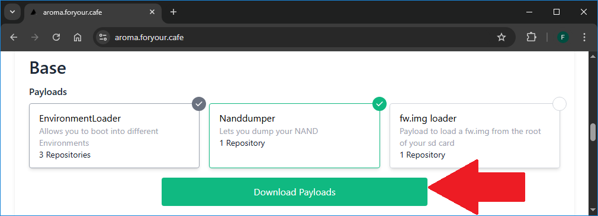

Guía de Piloncillo para Wii U
Esta guía te enseña paso a paso desde cero a instalar aplicaciones y juegos en tu consola. No importa si es completamente nueva o si fue modificada previamente.
Esta guía funciona para todas las Wii U comerciales sin importar su región en cualquier versión de firmware posterior a 5.5.2.
Con el método actual modificar la Wii U no tiene riesgo ni desventajas y te permite:
- Jugar online.
- Instalar y cargar juegos, así como instalar sus actualizaciones y DLC.
- Instalar y cargar juegos de cualquier región.
- Instalar y cargar juegos de sistemas más antiguos (Wii, GameCube, N64, SNES, NES, NDS, GBA, etc.).
- Hacer y restaurar copias de seguridad de los archivos de guardado de los juegos.
Para usar esta guía con éxito necesitas:
- Una Wii U con su GamePad y con acceso a internet.
- Una tarjeta SD de 4 GB o mayor (se recomienda una de 32 GB para instalar los juegos más pesados).
- Un dispositivo (PC o teléfono inteligente) para colocar archivos en la tarjeta SD.
Antes de empezar
Identifica si la consola fue modificada previamente.
Una Wii U modificada puede parecer una consola sin modificar y por el contrario una consola sin modificación puede parecer una consola modificada. Esto puede resultar muy confuso, pero así es. Solamente revisando todos los puntos de entrada es posible determinar si una Wii U se encuentra actualmente modificada y cuál es esa modificación, o por el contrario determinar si la Wii U se encuentra "limpia".
Usa la sección identificar modificación para revisar todos los puntos de entrada de la Wii U y todos los escenarios posibles ya que cada punto de entrada puede cargar o mostrar una gran variedad de cosas distintas.
Actualiza el firmware de la consola.
Lo mejor es actualizar a la última versión de firmware antes de modificar la consola ya que después de instalar la modificación lo ideal es bloquear las actualizaciones del sistema de la consola. Sin embargo, la modificación se puede instalar y usar en cualquier versión de firmware posterior a 5.5.2. Las versiones de firmware más actuales son:
- 5.5.6 U para consolas americanas.
- 5.5.5 E para consolas europeas.
- 5.5.5 J para consolas japonesas.
Desinstala cualquier modificación previa antes de instalar una modificación distinta
Para desinstalar cualquier modificación previa es opcional hacer una copia de todo el contenido de la tarjeta SD y formatear la tarjeta SD. Lo ideal es tener la tarjeta SD "limpia", pero si tienes muchas aplicaciones (como emuladores y ROMs) y te resulta complicado volver a colocar todo puedes dejar los archivos "viejos" y saltarte el formateo de la tarjeta SD. Al colocar los archivos de la "nueva" modificación debes siempre reemplazar los archivos "viejos" por los archivos "nuevos".
- Si la consola tiene Coldboot Haxchi (CBHC): Es obligatorio desinstalar Coldboot Haxchi correctamente antes de continuar.
- Si la consola tiene Haxchi: Se recomienda borrar la aplicación Haxchi en la gestión de datos en la configuración de la consola antes de continuar.
- Si la consola tiene Indexiine: Se recomienda desinstalar Indexiine correctamente antes de continuar.
Hacer una copia de seguridad de la memoria interna (NAND) de la Wii U
En general las memorias tipo NAND flash tienen una vida útil limitada, con el paso de los años la información almacenada en este tipo de memorias va degradándose hasta desaparecer, por eso tener un respaldo de la memoria interna de la Wii U es una buena práctica a largo plazo. En caso de que algo malo pase restaurar la copia de la memoria interna puede solucionarlo.
El respaldo de la NAND se hace usando la aplicación NAND Dumper, el respaldo se puede hacer sin importar cuál sea la modificación de la Wii U o incluso si la consola no se encuentra modificada, pero los pasos para abrir NAND Dumper varían dependiendo de cuál es la situación de la consola.
¿Cuál es la situación de la consola?
Usa Tiramisu o Aroma de arranque automático.
Usa Tiramisu o Aroma de arranque manual.
Abrir NAND Dumper
Si la consola ya tiene Tiramisu o Aroma de arranque automático:
- Si tienes el menú de inicio rápido activado desactiva las funciones en modo de reposo para hacer fácilmente a los pasos de abajo. Si no tienes el menú de inicio rápido activado continua con los siguientes pasos.

- En este punto debes tener la Wii U apagada con la tarjeta SD introducida.
- Enciende la consola y mantén presionado el botón B hasta que salga el menú Please choose your payload. Acceder a ese menú es necesario para poder hacer el respaldo de la NAND.
- Ya en el menú Please choose your payload usa las flechas del D-Pad del GamePad para seleccionar
nanddumpery presiona el botón A para iniciar la aplicación.
Abrir NAND Dumper
Si la consola tiene Tiramisu o Aroma de arranque manual:
- En este punto debes tener la Wii U apagada con la tarjeta SD introducida.
- Enciende la consola y accede al menú de Wii U.

- Abre Información sobre salud y seguridad y mantén presionado el botón B hasta que salga el menú Please choose your payload. Acceder a ese menú es necesario para poder hacer el respaldo de la NAND.
- Ya en el menú Please choose your payload usa las flechas del D-Pad del GamePad para seleccionar
nanddumpery presiona el botón A para iniciar la aplicación.
Abrir NAND Dumper
Si la consola tiene una modificación que no es Tiramisu o Aroma:
- Si no tienes la aplicación NAND Dumper:
- Saca la tarjeta SD de la Wii U y ponla en tu PC (o teléfono inteligente) para poner archivos.
- Descarga NAND Dumper.
- Descomprime el archivo
nanddumper.zip - Entra en la carpeta
wiiuy luego entra en la carpetaappsdel archivo descomprimido. - Copia la carpeta
nanddumpery pégala en la carpetasd:/wiiu/apps.
- Extrae la tarjeta SD de forma segura del dispositivo que usaste para hacer la copia de archivos e introdúcela en la ranura de la Wii U con la consola apagada.
- En este punto debes tener la Wii U apagada con la tarjeta SD introducida.
- Enciende la consola y carga la modificación que tengas instalada, debes cargar un CFW.
- Accede al Homebrew Launcher y carga NAND Dumper.
Prepara la tarjeta SD
La tarjeta SD colocada en el puerto SD de la Wii U debe estar formateada en FAT32 ya que la Wii U sólo reconoce tarjetas SD formateadas en FAT32.
Para tener la mejor estabilidad y compatibilidad se recomienda un tamaño de unidad de asignación (allocation unit size) de 32 kilobytes (32768) y dejar la etiqueta del volumen (volume label) en blanco ya que poner una etiqueta del volumen puede causar problemas con algunas aplicaciones homebrew.
- Conecta la tarjeta SD a una PC para formatearla.
- Para tarjetas SD de 4 GB hasta 32 GB puedes usar la aplicación de formateo de Windows:

- Para tarjetas SD de 4 GB hasta 2 TB puedes usar la aplicación GUIFormat:

Coloca los archivos de necesarios
No vamos a modificar nada en la Wii U, todo se queda en la tarjeta SD. En la instalación correcta de Tiramisu se hace el respaldo de la NAND antes de instalar algo en la consola, por eso los archivos de Tiramisu tienen todo lo necesario para hacer el respaldo de la NAND sin necesidad de modificar la Wii U.
Tiramisu es fácil de colocar, sólo debes descargar los archivos más recientes y ponerlos en la tarjeta SD.
- Este enlace lleva al sitio oficial: Tiramisu para tu café.
- Dentro del sitio debes tocar en el botón Download Tiramisu para iniciar la descarga de un archivo
.zip.
Colocar los archivos
- En este punto debes tener la tarjeta SD conectada a una PC (o teléfono inteligente) para colocar los archivos.
- Descomprime el archivo
.zipde Tiramisu. - Copia la carpeta
wiiuy el archivoversions.jsona la raíz de la tarjeta SD. - Tu tarjeta SD debe quedar como esta imagen:

- Extrae la tarjeta SD de forma segura del dispositivo que usaste para hacer la copia de archivos e introdúcela en la ranura de la Wii U con la consola apagada.
Abrir NAND Dumper
El exploit del navegador es el punto de entrada ideal para hacer una copia de seguridad de la NAND sin modificar la consola. Con los archivos de Tiramisu en la tarjeta SD ya tienes lo necesario para ejecutar el exploit.
- Enciende la consola y accede al menú de Wii U. Asegúrate de que la consola tenga acceso a internet para este paso.
- Abre el navegador de internet de la consola.
- Introduce la URL: u.wiidb.de (puedes consultar paginas alternativas aquí).

- Al cargar la página por completo mostrará en grande el enlace HAXX.

- Toca el enlace HAXX, cuando la pantalla del GamePad se ponga completamente en blanco mantén presionado el botón B hasta que salga el menú Please choose your payload.
- Acceder a ese menú es necesario para poder hacer el respaldo de la NAND. Si no lograste entrar a ese menú sigue los pasos de las notas de abajo.
- Ya en el menú Please choose your payload usa las flechas del D-Pad del GamePad para seleccionar
nanddumpery presiona el botón A para iniciar la aplicación.
sd:/wiiu/payload.elf. Mantén presionado el botón POWER de la consola hasta que se apague, revisa los archivos en la tarjeta SD y vuelve a intentar el exploit del navegador.Si aparece el menú del Environment Loader navega por el menú usando las flechas del D-Pad del GamePad, selecciona installer y presiona el botón A para iniciarlo.
Ahora debes estar en el PayloadLoader Installer, usando las flechas del D-Pad selecciona Exit y presiona el botón A para salir. La consola volverá al menú de Wii U, apaga la consola y vuelve a intentar el exploit del navegador.
NAND Dumper
- En este punto debes estar dentro de la aplicación NAND Dumper.

- Usa las flechas del D-Pad del Wii U GamePad para ingresar la configuración deseada.
- Dump SLC (528MB): yes
- Dump SLCCMPT (528MB): yes
- Dump MLC (8GB/32GB): Opcional
- Dump OTP (1KB): yes
- Dump SEEPROM (1KB): yes
- SLC: IOSU y Cafe OS, sistemas operativos del modo Wii U.
- SLCCMPT: IOS, sistema operativo del modo virtual Wii.
- MLC: Juegos, actualizaciones de los juegos, DLCs y archivos de guardado.
- OTP: Valores y keys (claves) de fábrica.
- SEEPROM: Valores y keys (claves) del sistema.
Aquí puedes ver una imagen de los chips de memoria de la consola.
- Presiona el botón A para iniciar el proceso de copia.
- Aparentemente la consola carga el menú de Wii U, pero en unos instantes mostrará el proceso de copiado.

- Cuando se complete el proceso la consola cargará el menú de Wii U.

- Apaga la consola, saca la tarjeta SD de la Wii U y conéctala a una PC (o teléfono inteligente) para mover los archivos del respaldo.
- Copia los archivos
otp.bin,seeprom.bin,slc.binyslccmpt.binde la raíz de la tarjeta SD a una ubicación segura en la PC (o teléfono inteligente). - Si elegiste realizar la copia de MLC, copia los archivos
mlc.bin.part##de la raíz de la tarjeta SD a una ubicación segura en la PC (o teléfono inteligente). - Elimina los archivos
otp.bin,seeprom.bin,slc.binyslccmpt.binde la tarjeta SD para liberar espacio. - Si elegiste realizar la copia de MLC, elimina los archivos
mlc.bin.part##de la tarjeta SD para liberar espacio. - Para seguir usando la modificación de la consola como siempre, extrae la tarjeta SD de forma segura del dispositivo que usaste para hacer la copia de archivos y ponla de regreso en la Wii U.
Desactivar las funciones en modo de reposo
La consola indica que está trabajando en modo de reposo cuando el LED de POWER cambia de rojo a naranja. Una consola con las funciones en modo de reposo activadas se activa periódicamente para descargar información de utilidad y actualizaciones del sistema, además permite usar el menú de inicio rápido en el GamePad.
Aunque el fin del soporte de la Wii U por parte de Nintendo está próximo es posible que la compañía aún lance actualizaciones para la consola. Las actualizaciones 5.5.3 a 5.5.6 se lanzaron después de que se descontinuó la fabricación de la Wii U, por lo que desactivar las funciones en modo de reposo para impedir la actualización automática de la consola es una acción recomendada. Además, desactivar el menú de inicio rápido facilita la identificación de Autobooting PayloadLoader.
Para desactivar las funciones en modo de reposo
- Entra en la Configuración de la consola
- Selecciona Ajustes de apagado.
- Toca en el bloque de Funciones en modo de reposo.
- Toca en No y después en Aceptar.
- Toca en Aceptar.
- Toca en Atrás o presiona B.
- Toca en Salir o persona B.
Ahora al apagar la consola no trabajará en modo de reposo y el LED de POWER no cambiará de rojo a naranja.
Bloquear las actualizaciones
Todos los exploits de Wii U actualmente conocidos pueden ser parcheados por una actualización del sistema. Aunque el fin del soporte de la Wii U por parte de Nintendo está próximo es posible que la compañía aún lance actualizaciones para la consola. Las actualizaciones 5.5.3 a 5.5.6 se lanzaron después de que se descontinuó la fabricación de la Wii U, por lo que bloquear las actualizaciones sigue siendo una acción recomendada.
Si bien Tiramisu ya tiene una funcionalidad de bloqueo de actualizaciones, se recomienda eliminar la carpeta update del sistema de la Wii U para bloquear de manera definitiva las actualizaciones del sistema de consola. Si llegaste a ver una pantalla de advertencia roja mientras Tiramisu iniciaba, quiere decir que la carpeta update aún existe y se recomienda eliminarla utilizando la guía de a continuación. Si en un futuro sale una actualización para el sistema de la Wii U, el proceso de descarga de la actualización se detendrá con un código de error 105-301X.
Eliminar la carpeta update del sistema de la Wii U
- Conecta la tarjeta SD de la Wii U a una PC (o teléfono inteligente).
- Con Tiramisu o hacks anetriores descarga la versión 1.1 de UFDiine.
- Debes descargar el archivo
ufdiine.zip. - Descomprime el archivo
ufdiine.zip, copia la carpetawiiua la raíz de la tarjeta SD.
- Extrae la tarjeta SD de forma segura del dispositivo que usaste para hacer la copia de archivos e introdúcela en la ranura de la Wii U.
- Enciende la consola y carga la modificación que tengas instalada, si no tienes Tiramisu debes cargar un CFW.
- Accede al Homebrew Launcher y carga UFDiine.
- Presiona el botón A para eliminar la carpeta de actualización.
- UFDiine debe indicar que Update folder is deleted confirmando que la carpeta update fue eliminada.
- Con Update folder is deleted están completamente bloqueadas las actualizaciones.
- Presiona el botón HOME para salir de UFDiine.
- En el Homebrew Launcher presiona el botón HOME para salir.
- Si te encuentras en el Editor de Mii toca en Salir para regresar al menú de Wii U.
- En el menú de Wii U, apaga la consola.
Desbloquear las actualizaciones
Si el proceso de descarga de la actualización se detiene con un código de error 105-301X prueba restaurar la carpeta update del sistema de la Wii U.
Restaurar la carpeta update del sistema de la Wii U
- Conecta la tarjeta SD de la Wii U a una PC (o teléfono inteligente).
- Con Tiramisu o hacks anetriores descarga la versión 1.1 de UFDiine.
- Debes descargar el archivo
ufdiine.zip. - Descomprime el archivo
ufdiine.zip, copia la carpetawiiua la raíz de la tarjeta SD.
- Extrae la tarjeta SD de forma segura del dispositivo que usaste para hacer la copia de archivos e introdúcela en la ranura de la Wii U.
- Enciende la consola y carga la modificación que tengas instalada, si no tienes Tiramisu debes cargar un CFW.
- Accede al Homebrew Launcher y carga UFDiine.
- Presiona el botón A para restaurar la carpeta de actualización.
- UFDiine indica que Update folder exists cuando la carpeta update es restaurada.
- Con Update folder exists están desbloqueadas las actualizaciones.
- Presiona el botón HOME para salir de UFDiine.
- En el Homebrew Launcher presiona el botón HOME para salir.
- Si te encuentras en el Editor de Mii toca en Salir para regresar al menú de Wii U.
- En el menú de Wii U, apaga la consola.
Formatear una tarjeta SD en FAT32
El GameCube, la Wii, la Wii U y la familia de consolas DSi y 3DS reconocen tarjetas SD formateadas en FAT32. En general el formato FAT32 es el más compatible.
Una tarjeta SD colocada en el puerto SD de la Wii o la Wii U debe estar formateada en FAT32 ya que la Wii o la Wii U en particular sólo reconocen tarjetas SD formateadas en FAT32.
Para tener la mejor estabilidad y compatibilidad se recomienda un tamaño de unidad de asignación (allocation unit size) de 32 kilobytes (32768) y dejar la etiqueta del volumen (volume label) en blanco ya que poner una etiqueta del volumen puede causar problemas con algunas aplicaciones homebrew.
- Conecta la tarjeta SD a una PC para formatearla.
- Para tarjetas SD de 4 GB hasta 32 GB puedes usar la aplicación de formateo de Windows:
- Para tarjetas SD de 4 GB hasta 2 TB puedes usar la aplicación GUIFormat:
Como revisar que la Wii U detecta la tarjeta SD
La tarjeta SD debe estar formateada en FAT32 para que la consola pueda detectarla.
Procedimiento
- Con la consola apagada introduce la tarjeta SD en el puerto SD de la Wii U.
- Enciende la consola, accede al menú de Wii U y abre el Editor de Mii.

- Si cargó el Homebrew Launcher entonces la consola está detectando la tarjeta SD, no importa si no aparecen aplicaciones. Presiona el botón HOME del GamePad de la Wii U y luego toca en Salir para regresar al menú de Wii U.
- Si no cargó el Homebrew Launcher no te preocupes (ese escenario sólo ocurre con Tiramisu correctamente configurado). Dentro del Editor de Mii toca en QR Code e Imágenes.
- Toca en Guardar como imagen.
- Si la consola te deja elegir un Mii para guardarlo como imagen entonces la consola está detectando la tarjeta SD.
- Si la consola te pide introducir una tarjeta SD entonces la consola no está detectando la tarjeta SD. Quédate en esta pantalla, expulsa la tarjeta SD y prueba con las siguientes recomendaciones:
- Limpia los contactos de cualquier partícula de polvo o pelusa. Si tienes aire a presión úsalo. Para una limpieza más profunda no uses agua, usa alcohol isopropílico y espera a que se evapore.
- Si estas usando una tarjeta microSD con adaptador prueba con otro adaptador. Algunos adaptadores de microSD a SD funcionan bien en PC, pero luego esos adaptadores no funcionan bien en la Wii U.
- Vuelve a introducir la tarjeta SD en el puerto SD de la Wii U, si el mensaje que te pide introducir una tarjeta SD desaparece entonces lograste que la consola detectara la tarjeta SD. Toca en Cancelar, Atrás y Salir para regresar al menú de Wii U.
- Si no logras que la consola detecte la tarjeta SD entonces vuelve revisar que esté formateada en FAT32 o prueba con otra tarjeta SD, si aun así ninguna tarjeta SD es detectada por la consola entonces es posible que el puerto SD de la Wii U se encuentre dañado, en ese caso debes llevar la consola con un técnico para que la revise.
Como revisar que la Wii U puede escribir datos en la tarjeta SD
Primero asegúrate que la Wii U detecta la tarjeta SD, los pasos son muy similares, pero aquí es necesario guardar un Mii como imagen para asegurase que la Wii U puede escribir datos en la tarjeta SD.
Procedimiento
- Con la consola apagada y la tarjeta SD introducida en el puerto SD de la Wii U enciende la consola, accede al menú de Wii U y abre el Editor de Mii.
- Si cargó el Homebrew Launcher presiona el botón HOME del GamePad de la Wii U. Si no cargó el Homebrew Launcher, no te preocupes, pasa al siguiente paso.
- Dentro del Editor de Mii toca en QR Code e Imágenes.
- Toca en Guardar como imagen.
- Elige un Mii, toca en Guardar.
- Toca en Solo la cara.
- Elige una expresión facial y toca en Guardar.
- La consola puede escribir datos en la tarjeta SD si muestra el mensaje: "Se ha guardado en la tarjeta SD una imagen de… ¿Quieres guardar otra?". Toca en No y luego toca en Salir para regresar al menú de Wii U.
- La consola no puede escribir datos en la tarjeta SD si muestra el mensaje: "La tarjeta SD está protegida contra escritura. Si quieres copiar o transferir datos, desprotégela.". Presiona el botón A para salir. Quédate en la pantalla QR Code e Imágenes, expulsa la tarjeta SD y comprueba si la tarjeta SD está bloqueada o desbloqueada. Vuelve a introducir la tarjeta SD en el puerto SD de la Wii U y repite del paso 4 en adelante.

- Si no logras que la consola escriba datos en la tarjeta SD entonces prueba con otra tarjeta SD (o con otro adaptador de microSD a SD), si la consola no puede escribir datos en ninguna tarjeta SD entonces es posible que el mecanismo de la Wii U que detecta el bloqueo de la tarjeta SD se encuentre dañado, en ese caso debes llevar la consola con un técnico para que la revise.
Desactivar el arranque automático del PayloadLoader
Actualmente tu consola tiene PayloadLoader de arranque automático, es decir, cada vez que enciendes la consola se carga Tiramisu automáticamente sin que tengas que hacer nada. Si deseas que Tiramisu no inicie automáticamente cada que la consola enciende debes desactivar el arranque automático del PayloadLoader.
Para desactivar el arranque automático hay que usar la aplicación PayloadLoader Installer para cambiar el arranque de la consola de Health and Safety Information (Información sobre salud y seguridad) a Wii U Menu (menú de Wii U).
- En este punto debes tener la Wii U apagada con la tarjeta SD introducida.
- Enciende la consola y mantén presionado el botón X hasta que salga el Environment Loader.
- Navega por el menú usando las flechas del D-Pad del GamePad, selecciona installer y presiona el botón A para iniciarlo.

- Ahora debes estar en el PayloadLoader Installer, con la opción Check seleccionada.

- Presiona el botón A para verificar.
- El instalador debe indicar que PayloadLoader está instalado en la aplicación Health and Safety Information (Información sobre salud y seguridad).
- Usa las flechas del D-Pad del GamePad para seleccionar Boot options y presiona el botón A.

- El instalador debe indicar que el sistema de la Wii U actualmente inicia con la aplicación Health and Safety Information.
- La opción Switch back to Wii U Menu debe estar seleccionada.
- Presiona el botón A. Esto hará que Wii U Menu sea la aplicación con la que inicia la Wii U.

- Después de que la instalación termine, presiona botón A para apagar la consola.

Ahora el PayloadLoader no arrancará automáticamente cada que enciendas la Wii U.
Activar el arranque automático del PayloadLoader
Actualmente tu consola tiene PayloadLoader de arranque manual, es decir, cada vez que quieres iniciar Tiramisu debes abrir la aplicación Información sobre salud y seguridad. Si deseas iniciar automáticamente Tiramisu cada que la consola enciende debes activar el arranque automático del PayloadLoader.
Para activar el arranque automático hay que usar la aplicación PayloadLoader Installer para cambiar el arranque de la consola de Wii U Menu (menú de Wii U) a Health and Safety Information (Información sobre salud y seguridad).
- En este punto debes tener la Wii U apagada con la tarjeta SD introducida.
- Enciende la consola y accede al menú de Wii U.
- Abre Información sobre salud y seguridad y mantén presionado el botón X hasta que salga el menú Environment Loader.
- Navega por el menú usando las flechas del D-Pad del GamePad, selecciona installer y presiona el botón A para iniciarlo.
- Ahora debes estar en el PayloadLoader Installer, con la opción Check seleccionada.
- Presiona el botón A para verificar.
- El instalador debe indicar que PayloadLoader está instalado en la aplicación Health and Safety Information (Información sobre salud y seguridad).
- Usa las flechas del D-Pad del GamePad para seleccionar Boot options y presiona el botón A.
- El instalador debe indicar que el sistema de la Wii U actualmente inicia con la aplicación Wii U Menu.
- La opción Switch to PayloadLoader debe estar seleccionada.
- Presiona el botón A. Esto hará que PayloadLoader sea la aplicación con la que inicia la Wii U.

- Después de que la instalación termine, presiona botón A para apagar la consola.
Ahora el PayloadLoader arrancará automáticamente cada que enciendas la Wii U.
Páginas con el exploit para el navegador
- http://u.wiidb.de/ Toca en HAXX.
- http://wiiuexploit.xyz/ Toca en el botón
Run Exploit!
. - Actualmente la página http://loadiine.ovh/ ha dejado de dar servicio.
Probar la beta de Aroma
¡¡Importante!! Antes de instalar la beta de Aroma debes tener Tiramisu instalado y actualizado, si no estás seguro de tener Tiramisu actualizado entonces primero sigue los pasos para actualizar Tiramisu y después regresa aquí.
Necesitas los archivos más recientes de Aroma
- Este enlace lleva al sitio oficial: Aroma para tu café.
- Dentro del sitio debes ir hasta abajo y tocar en las 4 checkbox para tenerlas palomeadas. Al hacerlo estás dando por entendido que:
- Conoces el alcance y las limitaciones de la versión beta de Aroma.
- La tarjeta SD no está protegida contra escritura, de lo contrario, va a salir el código de error 150-3030.
- Estas utilizando la versión más reciente del Environment Loader.
- Aroma recibirá actualizaciones frecuentes por lo cual debes mantenerte informado por vías oficiales para conocer las últimas noticias sobre su desarrollo.
- Al palomear la última casilla el sitio muestra los botones de descarga.
- Los bloques de la sección Base no nos interesan porque ya tenemos Tiramisu instalado y actualizado. 
- Clic en el botón Download Base Aroma (1) para iniciar la descarga del archivo
aroma-beta-16.zip. - Ya está seleccionado Bloopair, seleciona FTPiiU Plugin (2), SDCafiine Plugin (3), Screenshot Plugin (4) y SwipSwapMe (5), el resto de plugins no son necesarios para un usuario común, son útiles para desarrolladores o testers.
- Clic en el botón Download Additional Plugin and Modules (6) para iniciar la descarga del archivo
bloopair+ftpiiu+sdcafiine+screenshotplugin+swipswapme.zip.
- Descarga la versión más actual del módulo Sigpatches.
- Únicamente necesitas el archivo
01_sigpatches.rpx.
Instalación
- Descomprime el archivo
base-aroma-16.zip. - Copia la carpeta
wiiua la raíz de la tarjeta SD. - Descomprime el archivo
bloopair+ftpiiu+sdcafiine+screenshotplugin+swipswapme.zip. - Copia la carpeta
wiiua la raíz de la tarjeta SD.
- Copia el archivo
01_sigpatches.rpxa la carpetasd:/wiiu/environments/aroma/modules/setup.
- Extrae la tarjeta SD de forma segura del dispositivo que usaste para hacer la copia de archivos e introdúcela en la ranura de la Wii U con la consola apagada.
Configurar el arranque del Environment Loader y Aroma
- Si activaste el arranque automático del PayloadLoader: Enciende la consola y mantén presionado el botón X hasta que salga el Environment Loader.
- Si tu consola tiene PayloadLoader de arranque manual: Enciende la consola, accede al menú de Wii U, abre Información sobre salud y seguridad y mantén presionado el botón X del GamePad para abrir el Environment Loader.
- Navega por el menú usando las flechas del D-Pad del GamePad, selecciona Aroma.
- Opcionalmente presiona el botón Y para configurar Aroma como el entorno predeterminado.
- Presiona el botón A para abrir Aroma.

- Si te aparece un mensaje de alerta acerca del update folder (carpeta update) quiere decir que tu consola no está bloqueando las actualizaciones del sistema apropiadamente.

- Presiona el botón B para no volver a ver el mensaje de alerta.
- Puedes bloquear completamente las actualizaciones del sistema de la consola en cualquier momento después de completar la instalación de Aroma. Consulta la información de aquí cuando quieras bloquear las actualizaciones.
- Ahora debes estar en el Boot Selector de Aroma, con la opción Wii U Menu seleccionada, presiona el botón Y para configurar dicha opción como predeterminada y luego presiona el botón A para abrir el menú de Wii U.

- En este punto ya finalizaste la instalación de Aroma.
- Al usar Aroma el menú de Wii U puede no verse diferente al menú de Wii U normal.
- ¡Importante! Abres el menú de plugins de Aroma presionado
L+Abajo+SELECT. - Aún falta añadir aplicaciones, módulos y plugins que agregan funcionalidad a la modificación de la consola. Consulta la sección de Homebrew para Aroma.
- Toma nota de los cuadros de información de abajo para usar correctamente Aroma.
Introducción a Tiramisu

¿Qué es Tiramisu?
Tiramisu es un environment (entorno) homebrew para Wii U. Sus módulos permiten cargar un CFW (versión modificada de Mocha CFW), instalar el Homebrew Launcher en Mii Maker (Editor de Mii) y proporciona un menú de inicio automático.
Junto con PayloadLoader, es una alternativa a Coldboot Haxchi (CBHC) segura y gratuita, con algunas características adicionales como soporte completo para el menú de inicio rápido del GamePad y bloqueo parcial de actualizaciones.
Tiramisu es un entorno que debe cargarse por medio del Environment Loader.
Se recomienda realizar un arranque automático de Environment Loader a través de Autobooting PayloadLoader.
Tiramisu no es un hack. El hack formalmente sería "Autobooting PayloadLoader → Environment Loader → Tiramisu" (o "PayloadLoader → Environment Loader → Tiramisu").
¿Conviene actualizar de un hack anterior a Tiramisu?
Sí. En conjunto Environment Loader, PayloadLoader y Tiramisu tienen casi todas las ventajas de los anteriores hacks y ninguna de sus desventajas.

Paginas "oficiales" del proyecto
- [RELEASE] Tiramisu Environment | Free CBHC
- Tiramisu para tu café
- Wii U Hacks Guide
- FailST aka contenthax 2.0
- Tiramisu
Registro de cambios
31 de diciembre de 2021 - 10:09 p.m.
- Lanzamiento.
1 de enero de 2022 - 1:29 p.m.
- Arranque automático: Arregla el inicio rápido en applets.
- HBLInstallerWrapper: Corrige el lanzamiento de canales que ejecutan sus propios exploits. (por ejemplo, el Homebrew Launcher Channel y cualquier forwarder basado en este canal como el forwarder de Retroarch).
1 de enero de 2022 - 2:54 p.m.
- Corrige un problema de pantalla negra en la TV al iniciar en frío el entorno o en el menú de inicio automático.
3 de enero de 2022 - 4:26 p.m.
- MochaPayload: Ejecuta la llamada del sistema del kernel con permisos completos del kernel. (gracias @Gary#4139).
- MochaPayload: Parcha CheckTitleLaunch para ignorar la verificación del GamePad, esto permite lanzar títulos que normalmente requieren un GamePad.
- HBLInstallerWrapper: Parcha ACPGetTitleMetaXmlByDevice del proceso HomeMenu para permitir el arranque en frío del Homebrew Launcher sin un GamePad.
- Homebrew Launcher: Compatibilidad con esquemas de control adicionales (Pro Controller, etc.) (gracias @Gary#4139 y @neoninteger#6152).
5 de enero de 2022 - 3:30 p.m.
- Algunas personas informan fallas al iniciar juegos mientras tienen el modulo
50_hbl_installer.rpx. Resulta que había un error en el código de sd_loader de hace 6 años que nadie había notado antes. Algunas aplicaciones/juegos sólo se iniciaban si se ejecutaba el Homebrew Launcher antes, pero esto ahora se ha solucionado. - Corrige un problema que había al iniciar algunas aplicaciones, como los ajustes de Amiibo, cuando no se ejecutaba el Homebrew Launcher antes.
10 de enero de 2022 - 10:08 p.m.
- Corrige un softlock al ejecutar Mass Effect 3.
16 de enero de 2022 - 12:16 a.m.
- Espera a que los dispositivos USB realmente se activen.
- Reduce el glitch gráfico cuando se inicia el menú de Wii U.
18 de enero de 2022 - 2:14 p.m.
- Muestra la pantalla de selección de usuario cuando la consola inicia con el Homebrew Launcher y no hay una cuenta predeterminada configurada.
22 de enero de 2022 - 2:18 p.m.
- AutobootModule: Corrige el arranque en otras versiones de vWii HBL distintas al The Homebrew Channel - open source edition (Gracias @GaryOderNichts).
Créditos
- Maschell (Environment Loader, HBLInstallerWrapper, MochaPayload, PayloadLoader + PayloadLoaderInstaller, AutobootModule, ...)
- GaryOderNichts (AutobootModule, PayloadLoaderInstaller)
- dimok (Mocha CFW / Homebrew Launcher)
- pwsincd (Logo)
Actualizar Tiramisu
Tiramisu es extremadamente simple de actualizar, sólo debes descargar los archivos más recientes y remplazar los anteriores en la tarjeta SD.
Necesitas los archivos más recientes de Tiramisu
- Este enlace lleva al sitio oficial: Tiramisu para tu café.
- Dentro del sitio debes tocar en el botón Download Tiramisu para iniciar la descarga de un archivo
.zip. - Además, necesitas la versión más actual del módulo Sigpatches.
- Únicamente necesitas el archivo
01_sigpatches.rpx.
Instalación
- En este punto debes tener la tarjeta SD conectada a una PC (o teléfono inteligente) para colocar los archivos.
- Descomprime el archivo
.zipde Tiramisu. - Copia la carpeta
wiiuy el archivoversions.jsona la raíz de la tarjeta SD. - Tu tarjeta SD debe quedar como esta imagen:
- Copia el archivo
01_sigpatches.rpxa la carpetasd:/wiiu/environments/tiramisu/modules/setup.
- Extrae la tarjeta SD de forma segura del dispositivo que usaste para hacer la copia de archivos e introdúcela en la ranura de la Wii U con la consola apagada.
- En este punto ya finalizaste la actualización de Environment Loader y Tiramisu. La próxima vez que cargue el entorno de Tiramisu cargará con los archivos más actuales.
Prepara la tarjeta SD
La tarjeta SD colocada en el puerto SD de la Wii U debe estar formateada en FAT32 ya que la Wii U sólo reconoce tarjetas SD formateadas en FAT32.
Para tener la mejor estabilidad y compatibilidad se recomienda un tamaño de unidad de asignación (allocation unit size) de 32 kilobytes (32768) y dejar la etiqueta del volumen (volume label) en blanco ya que poner una etiqueta del volumen puede causar problemas con algunas aplicaciones homebrew.
- Conecta la tarjeta SD a una PC para formatearla.
- Para tarjetas SD de 4 GB hasta 32 GB puedes usar la aplicación de formateo de Windows:
- Para tarjetas SD de 4 GB hasta 2 TB puedes usar la aplicación GUIFormat:
Coloca los archivos de Tiramisu
Tiramisu es fácil de colocar, sólo debes descargar los archivos más recientes y remplazar los anteriores en la tarjeta SD.
- Este enlace lleva al sitio oficial: Tiramisu para tu café.
- Dentro del sitio debes tocar en el botón Download Tiramisu para iniciar la descarga de un archivo
.zip. - Además, necesitas la versión más actual del módulo Sigpatches.
- Únicamente necesitas el archivo
01_sigpatches.rpx.
Instalación
- En este punto debes tener la tarjeta SD conectada a una PC (o teléfono inteligente) para colocar los archivos.
- Descomprime el archivo
.zipde Tiramisu. - Copia la carpeta
wiiuy el archivoversions.jsona la raíz de la tarjeta SD. - Tu tarjeta SD debe quedar como esta imagen:
- Copia el archivo
01_sigpatches.rpxa la carpetasd:/wiiu/environments/tiramisu/modules/setup.
- Extrae la tarjeta SD de forma segura del dispositivo que usaste para hacer la copia de archivos e introdúcela en la ranura de la Wii U con la consola apagada.
Exploit del navegador
El exploit del navegador es el punto de entrada ideal para hacer una copia de seguridad de la NAND sin modificar la consola. Con los archivos de Tiramisu en la tarjeta SD ya tienes lo necesario para ejecutar el exploit.
- Enciende la consola y accede al menú de Wii U. Asegúrate de que la consola tenga acceso a internet para este paso.
- Abre el navegador de internet de la consola.
- Introduce la URL: u.wiidb.de (puedes consultar paginas alternativas aquí).
- Al cargar la página por completo mostrará en grande el enlace HAXX.
- Toca el enlace HAXX, cuando la pantalla del GamePad se ponga completamente en blanco mantén presionado el botón B hasta que salga el menú Please choose your payload.
- Acceder a ese menú es necesario para poder hacer el respaldo de la NAND. Si no lograste entrar a ese menú sigue los pasos de las notas de abajo.
- Ya en el menú Please choose your payload usa las flechas del D-Pad del GamePad para seleccionar
nanddumpery presiona el botón A para iniciar la aplicación.
sd:/wiiu/payload.elf. Mantén presionado el botón POWER de la consola hasta que se apague, revisa los archivos en la tarjeta SD y vuelve a intentar el exploit del navegador.Si aparece el menú del Environment Loader navega por el menú usando las flechas del D-Pad del GamePad, selecciona installer y presiona el botón A para iniciarlo.
Ahora debes estar en el PayloadLoader Installer, usando las flechas del D-Pad selecciona Exit y presiona el botón A para salir. La consola volverá al menú de Wii U, apaga la consola y vuelve a intentar el exploit del navegador.
Hacer una copia de seguridad de la memoria interna (NAND) de la Wii U
En general las memorias tipo NAND flash tienen una vida útil limitada, con el paso de los años la información almacenada en este tipo de memorias va degradándose hasta desaparecer, por eso tener un respaldo de la memoria interna de la Wii U es una buena práctica a largo plazo. En caso de que algo malo pase restaurar la copia de la memoria interna puede solucionarlo. La configuración del Autobooting de PayloadLoader tiene un riesgo casi nulo de dañar la consola.
- En este punto debes estar dentro de la aplicación NAND Dumper.
- Usa las flechas del D-Pad del Wii U GamePad para ingresar la configuración deseada.
- Dump SLC (528MB): yes
- Dump SLCCMPT (528MB): yes
- Dump MLC (8GB/32GB): Opcional
- Dump OTP (1KB): yes
- Dump SEEPROM (1KB): yes
- SLC: IOSU y Cafe OS, sistemas operativos del modo Wii U.
- SLCCMPT: IOS, sistema operativo del modo virtual Wii.
- MLC: Juegos, actualizaciones de los juegos, DLCs y archivos de guardado.
- OTP: Valores y keys (claves) de fábrica.
- SEEPROM: Valores y keys (claves) del sistema.
Aquí puedes ver una imagen de los chips de memoria de la consola.
- Presiona el botón A para iniciar el proceso de copia.
- Aparentemente la consola carga el menú de Wii U, pero en unos instantes mostrará el proceso de copiado.
- Cuando se complete el proceso la consola cargará el menú de Wii U.
- Apaga la consola, saca la tarjeta SD de la Wii U y conéctala a una PC (o teléfono inteligente) para mover los archivos del respaldo.
- Copia los archivos
otp.bin,seeprom.bin,slc.binyslccmpt.binde la raíz de la tarjeta SD a una ubicación segura en la PC (o teléfono inteligente). - Si elegiste realizar la copia de MLC, copia los archivos
mlc.bin.part##de la raíz de la tarjeta SD a una ubicación segura en la PC (o teléfono inteligente). - Elimina los archivos
otp.bin,seeprom.bin,slc.binyslccmpt.binde la tarjeta SD para liberar espacio. - Si elegiste realizar la copia de MLC, elimina los archivos
mlc.bin.part##de la tarjeta SD para liberar espacio. - Extrae la tarjeta SD de forma segura del dispositivo que usaste para hacer la copia de archivos y ponla de regreso en la Wii U.
Instalación de PayloadLoader
PayloadLoader es un punto de entrada que te permite acceder al Environment Loader (Cargador de Entorno) y a Tiramisu al abrir la aplicación Información sobre salud y seguridad.
Instrucciones
- En este punto debes tener la Wii U apagada con la tarjeta SD introducida.
- Enciende la consola y accede al menú de Wii U. Asegúrate de que la consola tenga acceso a internet para este paso.
- Abre el navegador de internet de la consola.
- Introduce la URL: u.wiidb.de (puedes consultar paginas alternativas aquí).
- Al cargar la página por completo mostrará en grande el enlace HAXX.
- Toca el enlace HAXX, cuando la pantalla del GamePad se ponga completamente en blanco mantén presionado el botón X hasta que salga el menú Environment Loader.
- Acceder a ese menú es necesario para instalar PayloadLoader. Si no lograste entrar a ese menú sigue los pasos de las notas de abajo.
- Navega por el menú usando las flechas del D-Pad del GamePad, selecciona installer y presiona el botón A para iniciarlo.
- Ahora debes estar en el PayloadLoader Installer, con la opción Check seleccionada.
- Presiona el botón A para verificar si es posible instalar PayloadLoader.
- El instalador debe indicarte que PayloadLoader se puede instalar en la aplicación Health and Safety Information (Información sobre salud y seguridad).
- La opción Install / Update debe estar seleccionada.

- Presiona el botón A para instalar PayloadLoader.
- El instalador te pregunta si estas REALMENTE seguro de querer instalar PayloadLoader.
- Usa las flechas del D-Pad del GamePad para seleccionar Install y presiona el botón A para iniciar la instalación.

- Después de que la instalación termine, presiona el botón A para apagar la consola.

sd:/wiiu/payload.elf. Mantén presionado el botón POWER de la consola hasta que se apague, revisa los archivos en la tarjeta SD y vuelve a intentar el exploit del navegador.Autobooting PayloadLoader (PayloadLoader de arranque automático)
Actualmente tu consola tiene PayloadLoader de arranque manual, es decir, cada vez que quieres iniciar Tiramisu debes abrir la aplicación Información sobre salud y seguridad. Si deseas iniciar automáticamente Tiramisu cada que la consola enciende debes activar el arranque automático del PayloadLoader.
Instrucciones
- En este punto debes tener la Wii U apagada con la tarjeta SD introducida.
- Enciende la consola y accede al menú de Wii U.
- Abre Información sobre salud y seguridad y mantén presionado el botón X hasta que salga el menú Environment Loader.
- Navega por el menú usando las flechas del D-Pad del GamePad, selecciona installer y presiona el botón A para iniciarlo.
- Ahora debes estar en el PayloadLoader Installer, con la opción Check seleccionada.
- Presiona el botón A para verificar.
- El instalador debe indicar que PayloadLoader está instalado en la aplicación Health and Safety Information (Información sobre salud y seguridad).
- Usa las flechas del D-Pad del GamePad para seleccionar Boot options y presiona el botón A.
- El instalador debe indicar que el sistema de la Wii U actualmente inicia con la aplicación Wii U Menu.
- La opción Switch to PayloadLoader debe estar seleccionada.
- Presiona el botón A. Esto hará que PayloadLoader sea la aplicación con la que inicia la Wii U.
- Después de que la instalación termine, presiona botón A para apagar la consola.
Ahora el PayloadLoader arrancará automáticamente cada que enciendas la Wii U.
Configurar el arranque del Environment Loader y de Tiramisu
Con la configuración actual cada que arranca PayloadLoader debes seleccionar y abrir manualmente Tiramisu en el Environment Loader, y luego, seleccionar y abrir manualmente el menú de Wii U en el Boot Selector de Tiramisu. Vamos a hacer que el Environment Loader cargue automáticamente Tiramisu y que Tiramisu cargue automáticamente el menú de Wii U. Es importante que la tarjeta SD no esté protegida contra escritura, de lo contrario, no se va a guardar la configuración del arranque.
- Si activaste el arranque automático del PayloadLoader: Enciende la consola y mantén presionado el botón X hasta que salga el Environment Loader.
- Si tu consola tiene PayloadLoader de arranque manual: Enciende la consola, accede al menú de Wii U, abre Información sobre salud y seguridad y mantén presionado el botón X del GamePad para abrir el Environment Loader.
- Navega por el menú usando las flechas del D-Pad del GamePad, selecciona tiramisu, presiona el botón Y para configurarlo como el entorno predeterminado y luego presiona el botón A para abrir Tiramisu.

- Si te aparece un mensaje de alerta acerca del update folder (carpeta update) quiere decir que tu consola no está bloqueando las actualizaciones del sistema apropiadamente.
- Presiona el botón B para no volver a ver el mensaje de alerta.
- Puedes bloquear completamente las actualizaciones del sistema de la consola en cualquier momento después de completar la instalación de Tiramisu. Consulta la información de aquí cuando quieras bloquear las actualizaciones.
- Ahora debes estar en el Boot Selector de Tiramisu, con la opción Wii U Menu seleccionada, presiona el botón Y para configurar dicha opción como predeterminada y luego presiona el botón A para abrir el menú de Wii U.

- En este punto ya finalizaste la instalación de PayloadLoader, del Environment Loader y de Tiramisu, tu consola iniciará con Tiramisu de forma predeterminada.
- Al usar Tiramisu el menú de Wii U no se ve diferente al menú de Wii U normal.
- En la página siguiente vamos a añadir aplicaciones y módulos que agregan funcionalidad a la modificación de la consola.
- Toma nota de los cuadros de información de abajo para usar correctamente Tiramisu.
Añadir aplicaciones y módulos
Ya tienes la consola modificada, pero para aprovecharla hay que agregar aplicaciones. En caso de que quieras añadir alguna aplicación que no está aquí o que quieras actualizar alguna aplicación es impórtate que aprendas a colocarlas por tu cuenta.
En general las aplicaciones para Wii U se colocan en la carpeta sd:/wiiu/apps, observa la ruta de carpetas en las imágenes de referencia. Si tienes dudas usa las imágenes para comprobar que ubicaste cada aplicación correctamente.
Las aplicaciones se abren usando el menú del Homebrew Launcher ("lanzador de aplicaciones hechas en casa"). En la imagen de abajo el Homebrew Launcher tiene tres aplicaciones: Homebrew App Store, SaveMii Mod y WUP Installer GX2.

Añadir aplicaciones al Homebrew Launcher
- Si tienes encendida la consola apágala.
- Saca la tarjeta SD de la Wii U y ponla en tu PC (o teléfono inteligente) para poner archivos.
Vamos a descargar los archivos de las siguientes aplicaciones:
- WUP Installer GX2.
- SaveMii mod WUT Port.
- Homebrew Appstore (descarga el archivo
wiiu-extracttosd.zip). - Bloopair (descarga el archivo
Bloopair_v#.#.#.zip). - NUSspli (descarga el archivo
NUSspli-#.###-HBL.zip).
Ahora vamos a instalar las aplicaciones:
- Descomprime el archivo
wup_installer_gx2.zip - Entra en la carpeta
wiiuy luego entra en la carpetaappsdel archivo descomprimido. - Copia la carpeta
wup_installer_gx2y pégala en la carpetasd:/wiiu/apps.
- Descomprime el archivo
SaveMiiModWUTPort.zip - Entra en la carpeta
wiiuy luego entra en la carpetaappsdel archivo descomprimido. - Copia la carpeta
SaveMiiModWUTPorty pégala en la carpetasd:/wiiu/apps.
- Descomprime el archivo
wiiu-extracttosd.zip - Entra en la carpeta
wiiuy luego entra en la carpetaappsdel archivo descomprimido. - Copia la carpeta
appstorey pégala en la carpetasd:/wiiu/apps.
- Descomprime el archivo
Bloopair_v#.#.#.zip - Entra en la carpeta
wiiuy luego entra en la carpetaappsdel archivo descomprimido. - Copia la carpeta
Bloopair_pair_menuy pégala en la carpetasd:/wiiu/apps.
- Descomprime el archivo
NUSspli-#.###-HBL.zip - Entra en la carpeta del archivo descomprimido.
- Copia la carpeta
NUSspliy pégala en la carpetasd:/wiiu/apps.
Las aplicaciones que acabas de instalar sirven para:
- WUP Installer GX2 (Wii U Public title Installer) es un instalador de juegos y aplicaciones en formato NUS Content cifrado de Wii U (archivos
.app,.h3,title.tmd,title.certytitle.tik). - SaveMii mod WUT Port permite administrar los archivos de datos guardado de juegos de Wii U y Wii.
- La Homebrew Appstore permite buscar y descargar aplicaciones homebrew de Wii U directamente desde la Wii U.
- Bloopair permite conectar de forma inalámbrica los controles Bluetooth más populares. Consulta el hilo oficial de la aplicación para más detalles.
- NUSspli permite descargar e instalar juegos de forma rápida y simple directamente desde la Wii U.
- La aplicación WUP Installer GX2 se encuentra en
sd:/wiiu/apps/wup_installer_gx2/wup_installer_gx2.elf.
- La aplicación HB App Store se encuentra en
sd:/wiiu/apps/appstore/appstore.rpx.
- La aplicación SaveMii mod WUT Port se encuentra en
sd:/wiiu/apps/SaveMiiModWUTPort/savemii.rpx.
- La aplicación Bloopair pair menu se encuentra en
sd:/wiiu/apps/Bloopair_pair_menu/Bloopair_pair_menu.rpx.
- La aplicación NUSspli se encuentra en
sd:/wiiu/apps/NUSspli/NUSspli.rpx.
Añadir módulos a Tiramisu
Los módulos deben estar hechos explícitamente para ser usados en el entorno de Tiramisu, tienen formato .rpx.
- Si seguiste las instrucciones para añadir aplicaciones al Homebrew Launcher debes tener el archivo
Bloopair_v#.#.#.zip - Descomprime el archivo
Bloopair_v#.#.#.zipy copia el archivo30_bloopair.rpxa la carpetasd:/wiiu/environments/tiramisu/modules/setup.
30_bloopair.rpx es Bloopair en sí mismo. Cargará junto con el resto de módulos cuando inicie el entorno de Tiramisu.- Extrae la tarjeta SD de forma segura del dispositivo que usaste para hacer la copia de archivos e introdúcela en la ranura de la Wii U con la consola apagada.
Importante recuerda que:
- A partir de ahora accedes al Homebrew Launcher desde el Editor de Mii.
- Desde el menú del Homebrew Launcher abres las aplicaciones homebrew de Wii U como WUP Instaler GX2, NUSspli, SaveMii, etc.
- Ocasionalmente haz una copia de seguridad de todos los archivos de la tarjeta SD, si en algún momento se daña o pierde la tarjeta SD puedes reponer los archivos fácilmente.
Aquí termina la guía de Tiramisu. Puedes continuar con la siguiente guía o volver al inicio.
Resumen de la instalación de Tiramisu
Los siguientes pasos son los esenciales para instalar Tiramisu de forma correcta. Si tienes dudas consulta la guía detallada de instalación de Tiramisu.
- Formatea la tarjeta SD en FAT32 con unidad de asignación de 32 kilobytes (32768).
- Descarga los archivos de Tiramisu para tu café.
- Descarga el módulo Sigpatches.
- Copia el contenido del archivo
.zipde Tiramisu a la raíz de la tarjeta SD. - Copia el archivo
01_sigpatches.rpxa la carpetasd:/wiiu/environments/tiramisu/modules/setup. - Enciende la consola con la tarjeta SD puesta.
- Abre el navegador de internet de la consola.
- Introduce la URL: u.wiidb.de.
- Toca el enlace HAXX y mantén presionado el botón X.
- Con la opción installer seleccionada presiona el botón A.
- Con la opción Check seleccionada presiona el botón A.
- Con la opción Install / Update seleccionada presiona el botón A.
- Selecciona Install y presiona el botón A.
- Presiona el botón A para apagar la consola.
- Enciende la consola.
- Abre Información sobre salud y seguridad y mantén presionado el botón X.
- Con la opción installer seleccionada presiona el botón A.
- Con la opción Check seleccionada presiona el botón A.
- Selecciona Boot options y presiona el botón A.
- Con la opción Switch to PayloadLoader seleccionada presiona el botón A.
- Presiona el botón A para apagar la consola.
- Enciende la consola y mantén presionado el botón X.
- Selecciona tiramisu, presiona el botón Y y luego presiona el botón A.
- Presiona el botón B.
- Con la opción Wii U Menu seleccionada, presiona el botón Y y luego presiona el botón A.
- En este punto ya finalizaste la instalación de Environment Loader, PayloadLoader y Tiramisu, pero aún falta añadir aplicaciones y módulos que agregan funcionalidad al "hack" de la consola. Toma nota de los siguientes cuadros de información para usar correctamente Tiramisu.
Identificación y diagnostico
Usa esta sección para determinar y analizar el estado del hack de tu consola. Al contestar las preguntas de los 4 apartados (PayloadLoader, Autobooting, Haxchi e Indexiine) obtendrás información que puede ser de mucha utilidad, esta información es difícil de encontrar en otros sitios.
La forma más fácil para identificar el "hack" de tu Wii U es reconocer el punto de entrada que da acceso a ejecutar aplicaciones "caseras". Puedes tener más de un punto de entrada en tu consola así que contesta las preguntas de todos los siguientes apartados.
➤ PayloadLoader: La pregunta de este apartado te permitirá detectar si tienes PayloadLoader en tu consola.
➤ Autobooting: Para detectar Coldboot Haxchi o Autobooting PayloadLoader. Contesta la pregunta de este apartado para determinar si tu consola inicia de forma automática un "hack".
➤ Haxchi: Al contestar la(s) pregunta(s) de este apartado podrás determinar si tu consola tiene Haxchi correctamente instalado.
➤ Indexiine: Contesta la pregunta de este apartado para detectar Indexiine en tu consola.
Webhack: Contesta todas las preguntas de los apartados anteriores para determinar si el exploit del navegador es el único punto de entrada de tu consola. Todas las Wii U, incluidas las que nunca has sido hackeadas, tienen con este punto de entrada.
¿La Wii U tiene tarjeta SD?
¿En la raíz de la tarjeta SD hay una carpeta wiiu?
Información adicional sobre la identificación
¿Por qué en la identificación del hack no aparece Mocha, IOSUHAX, Loadiine, Tiramisu, etc.? Mocha no es un "hack", Mocha es un CFW, igualmente IOSUHAX es un CFW, por otro lado Loadiine es una aplicación y Tiramisu es un Environment. Para poder cargar cualquiera de estos elementos se hace uso de un procedimiento, es ese procedimiento lo que en verdad importa, ese procedimiento es el punto de entrada del hack.
Si usas el navegador de Internet para cargar el "hack" entonces tu consola tiene Webhack o tiene Indexiine. Si debes entrar en una página web y tocar un enlace o botón en la pantalla del GamePad de Wii U para poder ejecutar el "hack" entonces tienes Webhack. Si sólo debes abrir el navegador de Internet y esperar sin tocar nada a que cargue el "hack" entonces tienes Indexiine.
Si compraste tu consola de segunda mano y no sabes cómo instalaron los juegos en la consola (o en el dispositivo USB de la misma) lo más probable es que usaron Webhack más WUP Installer GX2 para instalar los juegos. Hay un conjunto de juegos que puedes abrir sin ejecutar ningún hack (funcionan igual que juegos legítimos), estos juegos cuentan con una versión en físico. De los discos originales se han extraído los tickets siempre válidos y se han colocado en las copias digitales, eso se llama método brasileño. Por otra parte, el contenido exclusivo de la eShop (juegos de Consola Virtual y DLCs) requieren de aplicar un parche de firmas (signature patch) para poder abrirlos o para ser instados.
PayloadLoader
El "hack" Tiramisu (o Aroma) es fácil de detectar ya que se instala el PayloadLoader en el icono de Información sobre salud y seguridad.
PayloadLoader es el punto de entrada que se usa para cargar el Environment Loader y a su vez el Environment Loader se usa para cargar Tiramisu (o Aroma). Dependiendo de la configuración de Tiramisu (o Aroma) se puede cargar determinada cosa, pero lo más común es que automáticamente cargue el menú de Wii U.
Enciende la consola con la tarjeta SD puesta, accede al menú de Wii U, abre el icono de Información sobre salud y seguridad, y observa que ocurre en la pantalla del GamePad, no presiones ningún botón.
¿Al abrir el icono de Información sobre salud y seguridad carga algo especial?
Apaga la consola.
Autobooting (Arranque Automático)
Un par de "hacks" pueden iniciar de forma automática al encender la Wii U, estos "hacks" son: Coldboot Haxchi y Autobooting PayloadLoader.
Para lograr el arranque automático se configura la consola para que en lugar de cargar el menú de Wii U cargue la aplicacion "hackeada", en el caso de Coldboot Haxchi carga el juego de Nintendo DS "hackeado" con Haxchi y en el caso de Autobooting PayloadLoader se carga la aplicación Información sobre salud y seguridad "hackeada" con PayloadLoader.
Dependiendo de la configuración del "hack" se puede cargar otra cosa después del "autobooting", pero lo más común es que automáticamente cargue el menú de Wii U.
Para determinar si hay un "hack" de arranque automático en tu Wii U vigila lo que pasa al encender la consola. Enciende la consola con la tarjeta SD puesta y observa que ocurre en la pantalla del GamePad, no presiones ningún botón. Selecciona lo que muestre primero la consola.
¿Al encender la consola se muestra algo en particular?
Usar el menú de inicio rápido impide observar la carga del PayloadLoader al encender la consola, para comprobar al 100% que la consola no tenga Autobooting PayloadLoader es necesario desactivar las funciones en modo de reposo y volver a contestar la pregunta de está sección.
Apaga la consola.
Haxchi
Este "hack" no es tan fácil de detectar sin algo de experiencia. El problema es que Haxchi puede ser personalizado para que muestre cualquier icono y título, además Haxchi se puede configurar para cargar cualquier aplicación homebrew. La forma más simple de determinar que una consola tiene Haxchi correctamente instado es encendiendo la consola, abriendo directamente el icono de Haxchi en el menú de Wii U y observando que pasa.
Para evitar confusiones la siguiente lista explica que cosas no son tener Haxchi en la Wii U:
· Tener Haxchi en el Homebrew Launcher no es tener Haxchi instalado en la consola. La aplicación que se muestra en el Homebrew Launcher es el instalador (y actualizador) de Haxchi.
· Tener alguna carpeta haxchi en la tarjeta SD no es tener Haxchi instalado en la consola. La carpeta haxchi en la raíz de la tarjeta SD es parte del instalador (y actualizador) de Haxchi.
· Tener un icono de Haxchi en el menú de Wii U no necesariamente es tener Haxchi correctamente instalado en la consola. El icono de Haxchi en el menú de Wii U puede estar presente, pero sólo se puede comprobar si es Haxchi correctamente instalado si no requiere de algo más para abrirlo, es decir debes poder abrirlo directamente despues de encender la consola sin que salga ningún mensaje de error.
¿Tienes un icono de Haxchi (cualquiera) en el menú de Wii U?
Enciende la consola con la tarjeta SD puesta, accede al menú de Wii U, abre el icono de Haxchi y observa que ocurre en la pantalla del GamePad, no presiones ningún botón.
¿Pudiste abrir el icono de Haxchi en el menú de Wii U?
Apaga la consola.
Indexiine
Existen dos "hacks" que usan el mismo exploit del navegador. Con Webhack debes entrar en una página web y tocar en un enlace o botón para ejecutar el exploit, por otro lado, con Indexiine no necesitas entrar en ninguna página ni tocar nada ya que se ejecuta automáticamente después de unos segundos de abrir el navegador.
El exploit del navegador es un punto de entrada muy versátil ya que se puede usar para cargar cualquier aplicación homebrew. Sin embargo, también es fácil bloquear el navegador si es que se desconfiguran los ajustes correctos del propio navegador teniendo Indexiine instalado.
Para evitar confusiones debes saber que tener la aplicación Indexiine Installer en el Homebrew Launcher no es tener Indexiine instalado en la consola. La aplicación que se muestra en el Homebrew Launcher es el instalador de Indexiine, puedes tener la aplicación Indexiine Installer en el Homebrew Launcher sin tener realmente instalado Indexiine en la consola.
Enciende la consola con la tarjeta SD puesta, accede al menú de Wii U, abre el navegador de Internet y observa que ocurre en la pantalla del GamePad, espera unos segundos, no presiones ningún botón.
¿Al abrir el navegador carga algo especial?
Apaga la consola.
Desinstalar PayloadLoader correctamente
Necesitas los archivos más recientes de Tiramisu
- Este enlace lleva al sitio oficial: Tiramisu para tu café.
- Dentro del sitio debes tocar en el botón Download Tiramisu para iniciar la descarga de un archivo
.zip.
Instalación
- En este punto debes tener la tarjeta SD conectada a una PC (o teléfono inteligente) para colocar los archivos.
- Descomprime el archivo
.zipde Tiramisu. - Copia la carpeta
wiiuy el archivoversions.jsona la raíz de la tarjeta SD. - Tu tarjeta SD debe quedar como esta imagen:
- Extrae la tarjeta SD de forma segura del dispositivo que usaste para hacer la copia de archivos e introdúcela en la ranura de la Wii U con la consola apagada.
Desactivar el arranque automático del PayloadLoader
- Enciende la consola y mantén presionado el botón X hasta que salga el Environment Loader.
- Navega por el menú usando las flechas del D-Pad del GamePad, selecciona installer y presiona el botón A para iniciarlo.
- Ahora debes estar en el PayloadLoader Installer, con la opción Check seleccionada.
- Presiona el botón A para verificar.
- El instalador debe indicar que PayloadLoader está instalado en la aplicación Health and Safety Information (Información sobre salud y seguridad).
- Usa las flechas del D-Pad del GamePad para seleccionar Boot options y presiona el botón A.
- El instalador debe indicar que el sistema de la Wii U actualmente inicia con la aplicación Health and Safety Information.
- La opción Switch back to Wii U Menu debe estar seleccionada.
- Presiona el botón A. Esto hará que Wii U Menu sea la aplicación con la que inicia la Wii U.
- Después de que la instalación termine, presiona botón A para apagar la consola.
Ahora el PayloadLoader no arrancará automáticamente cada que enciendas la Wii U.
Desinstalar PayloadLoader
- Enciende la consola y accede al menú de Wii U.
- Abre Información sobre salud y seguridad y mantén presionado el botón X hasta que salga el menú Environment Loader.
- Navega por el menú usando las flechas del D-Pad del GamePad, selecciona installer y presiona el botón A para iniciarlo.
- Ahora debes estar en el PayloadLoader Installer, con la opción Check seleccionada.
- Presiona el botón A para verificar.
- El instalador debe indicar que PayloadLoader está instalado en la aplicación Health and Safety Information (Información sobre salud y seguridad).
- Usa las flechas del D-Pad del GamePad para seleccionar Remove y presiona el botón A.

- El instalador te pregunta si estas REALMENTE seguro de querer desinstalar PayloadLoader.
- Usa las flechas del D-Pad del GamePad para seleccionar Remove y presiona el botón A para iniciar la desinstalación.

- Después de que la desinstalación termine, presiona botón A para apagar la consola.
- En este punto ya finalizaste la desinstalación de PayloadLoader.
Haz una copia de todo el contenido de la tarjeta SD en la PC (o el teléfono inteligente) y borra definitivamente el contenido de la tarjeta SD, puedes formatear la tarjeta SD para borrar absolutamente todo. Con eso ya haz desinstalado el Environment Loader y Tiramisu correctamente.
Si quieres eliminar una aplicación homebrew instalada en el menú de Wii U puedes borrarla desde gestión de datos dentro de la configuración de la consola, sin ningún problema.
Con los pasos anteriores ya puedes instalar en limpio cualquier otra modificación de Wii U. No es necesario que formatees la consola.
Desinstalar Webhack correctamente
Webhack no modifica nada en la consola por eso desinstalar Webhack es simplemente borrar el payload dentro de la carpeta wiiu de la tarjeta SD de la consola.
Haz una copia de todo el contenido de la tarjeta SD (en una computadora o teléfono móvil) y borra definitivamente el contenido de la tarjeta SD, puedes formatear la tarjeta SD para borrar absolutamente todo. Con eso ya haz desinstalado Webhack correctamente.
Si quieres eliminar una aplicación homebrew instalada en el menú de Wii U puedes borrarla desde gestión de datos dentro de la configuración de la consola sin ningún problema.
Con los pasos anteriores ya puedes instalar en limpio cualquier otra modificación de Wii U. No es necesario formatear la consola.
Desinstalar Indexiine correctamente
Recuerda que al momento de instalar Indexiine se remplaza el archivo index.html dentro del navegador de la consola por eso desinstalar Indexiine es restaurar el archivo index.html original del navegador, después de restaurarlo puedes volver a ocupar el navegador de forma normal.
Desinstalar Indexiine se resume en ejecutar Indexiine Installer desde el Homebrew Launcher.
Si tienes acceso al Homebrew Launcher y puedes abrir aplicaciones desde ahí entonces es muy fácil desinstalar Indexiine, pero si no tienes acceso al Homebrew Launcher entonces hay que seguir un procedimiento algo más complicado.
¿Puedes abrir el Homebrew Launcher?
Desinstalar Indexiine correctamente
Aquí se asume que sabes cómo entrar en el Homebrew Launcher para iniciar aplicaciones.
Para asegurar que todo salga bien debes preparar y revisar algunos archivos en la tarjeta SD. Así que apaga la consola, saca la tarjeta SD de la Wii U y ponla a tu dispositivo (computadora o teléfono móvil) para copiar archivos.
Descarga
- Indexiine-Installer (descarga el archivo
indexiine-installer.zip). - Archivo backup-index.html (es el respaldo del archivo original del navegador).
Colocación
- Si no tienes Indexiine Installer en el Homebrew Launcher descomprime el archivo
indexiine-installer.zipy copia la carpetawiiua la raíz de la tarjeta SD.
- Revisa la carpeta
sd:/wiiu/apps/indexiine-installer. - Si tienes un archivo
backup-index.htmlen dicha carpeta entonces remplázalo con el respaldo que descargaste. - Si no tienes el archivo
backup-index.htmlen dicha carpeta entonces coloca el respaldo que descargaste.
Procedimiento de desinstalación
- Extrae la tarjeta SD de forma segura del dispositivo que usaste para hacer la copia de archivos e introdúcela en la ranura de la Wii U con la consola apagada.
- Enciende la consola y accede al menú de Wii U.
- Abre el Homebrew Launcher como ya sabes hacerlo.
- Navega por el menú del Homebrew Launcher, selecciona Indexiine Installer y toca en Load para cargar la aplicacion.
- Dentro de Indexiine Installer presiona el botón B para desinstalar Indexiine.
- Después de que la desinstalación termine regresará automáticamente al Homebrew Launcher.
- En este punto ya has desinstalado Indexiine correctamente.
Si quieres eliminar una aplicación homebrew instalada en el menú de Wii U puedes borrarla desde gestión de datos dentro de la configuración de la consola sin ningún problema.
Haz una copia de todo el contenido de la tarjeta SD (en una computadora o teléfono móvil) y borra definitivamente el contenido de la tarjeta SD, puedes formatear la tarjeta SD para borrar absolutamente todo.
Con los pasos anteriores ya puedes instalar en limpio cualquier otra modificación de Wii U. No es necesario formatear la consola.
Desinstalar Indexiine correctamente
Aquí se asume que no puedes abrir el Homebrew Launcher, posiblemente tengas el navegador bloqueado (por inestabilidad de Indexiine) lo cual te impide cargar el CFW o el mismo Homebrew Launcher.
Para asegurar que todo salga bien debes preparar y revisar algunos archivos en la tarjeta SD. Así que apaga la consola, saca la tarjeta SD de la Wii U y ponla a tu dispositivo (computadora o teléfono móvil) para copiar archivos.
Descarga
- Configurable Payload (descarga el archivo
payload.elf). - Homebrew Launcher (descarga el archivo
homebrew_launcher.elf). - Indexiine-Installer (descarga el archivo
indexiine-installer.zip). - Archivo backup-index.html (es el respaldo del archivo original del navegador).
Colocación
- Descomprime el archivo
indexiine-installer.zipy copia la carpetawiiua la raíz de la tarjeta SD.
- Revisa que tengas el archivo
sd:/wiiu/apps/homebrew_launcher/homebrew_launcher.elf. - Si no lo tienes crea la carpeta
homebrew_launcherdentro de la carpetasd:/wiiu/appsy despues coloca el archivohomebrew_launcher.elfdentro de la carpetasd:/wiiu/apps/homebrew_launcher. - Revisa la carpeta
sd:/wiiu/apps/indexiine-installer. - Si tienes un archivo
backup-index.htmlen dicha carpeta remplázalo con el respaldo que descargaste. - Si no tienes el archivo
backup-index.htmlen dicha carpeta entonces coloca el respaldo que descargaste. - Revisa la carpeta
sd:/wiiu. - Si tienes un archivo
payload.cfgen dicha carpeta borralo. - Si tienes un archivo
payload.elfen dicha carpeta remplázalo con el respaldo que descargaste. - Si no tienes el archivo
payload.elfen dicha carpeta entonces coloca el respaldo que descargaste.
Procedimiento de desinstalación
- Extrae la tarjeta SD de forma segura del dispositivo que usaste para hacer la copia de archivos e introdúcela en la ranura de la Wii U con la consola apagada.
- Enciende la consola y accede al menú de Wii U.
- Abre el icono de Notificaciones (se encuentra al lado derecho del icono del navegador de internet en el menú de Wii U).
- Desplázate por la lista de notificaciones hasta la notificación Actualización de la consola y ábrela.
- Toca el icono del navegador de internet en la esquina inferior derecha.
- Toca en Sí. Esto cargará el navegador de internet.
- Saldrá un código de error. Toca en Sí y toca en la parte superior de la pantalla del GamePad para ingresar una URL.
- Introduce la URL: u.wiidb.de (puedes consultar paginas alternativas aquí).
- Al cargar la página por completo toca en HAXX, espera unos segundos, deberá cargar el Homebrew Launcher. Si no logras entrar al Homebrew Launcher, paga la consola y vuelve a intentarlo (asegúrate de haber colocado correctamente los archivos en la tarjeta SD).
FSGetMountSource falied. Please insert a FAT32 formatted sd card.quiere decir que la consola no está detectando la tarjeta SD, limpia los contactos, si estas usando una microSD cambia el adaptador. Mantén presionado el botón POWER de la consola hasta que se apague.
FSOpenFile falied. File missing /vol/external01/wiiu/payload.elf.quiere decir que la consola sí está detectando la tarjeta SD, pero no encontró el archivo
payload.elf dentro de la carpeta sd:/wiiu. Mantén presionado el botón POWER de la consola hasta que se apague.- Una vez dentro del Homebrew Launcher navega por el menú, selecciona Indexiine Installer y toca en Load para cargar la aplicacion.
- Dentro de Indexiine Installer presiona el botón B para desinstalar Indexiine.
- Después de que la desinstalación termine regresará automáticamente al Homebrew Launcher.
- En este punto ya has desinstalado Indexiine correctamente.
- Presiona el botón HOME y luego toca el botón Salir para regresar al menú de la Wii U.
Si quieres eliminar una aplicación homebrew instalada en el menú de Wii U puedes borrarla desde gestión de datos dentro de la configuración de la consola sin ningún problema.
Haz una copia de todo el contenido de la tarjeta SD (en una computadora o teléfono móvil) y borra definitivamente el contenido de la tarjeta SD, puedes formatear la tarjeta SD para borrar absolutamente todo.
Con los pasos anteriores ya puedes instalar en limpio cualquier otra modificación de Wii U. No es necesario formatear la consola.
Desinstalar Haxchi correctamente
Recuerda que al momento de instalar Haxchi se inyecta dentro de un juego de Nintendo DS por eso desinstalar Haxchi es como desinstalar cualquier juego. Después de borrarlo puedes volver a descargar el juego de Nintendo DS desde la eShop y usarlo de forma normal.
- Abre el icono de Configuración de la consola.
- Entra en Gestión de datos, luego en Transferir, copiar o borrar datos.
- Selecciona Memoria de la consola, en la lista busca el icono de Haxchi.
- Selecciona el icono de Haxchi y vuelve a selecciónalo para que salga el botón Borrar.
- Toca el botón de Borrar y después el botón Sí, espera a que se borre, y después toca en Aceptar.
En este punto ya has desinstalado Haxchi correctamente.
Si quieres eliminar una aplicación homebrew instalada en el menú de Wii U puedes borrarla desde gestión de datos dentro de la configuración de la consola sin ningún problema.
Haz una copia de todo el contenido de la tarjeta SD (en una computadora o teléfono móvil) y borra definitivamente el contenido de la tarjeta SD, puedes formatear la tarjeta SD para borrar absolutamente todo.
Con los pasos anteriores ya puedes instalar en limpio cualquier otra modificación de Wii U. No es necesario formatear la consola.
Desinstalar Coldboot Haxchi correctamente
Recuerda que al momento de instalar Coldboot Haxchi se remplaza el menú de Wii U por Haxchi por eso desinstalar Coldboot Haxchi es restaurar el menú de Wii U y desinstalar Haxchi después de eso puedes volver a usar la consola de forma normal.
Se asume que sabes entrar en el Homebrew Launcher para iniciar aplicaciones ya que desinstalar Coldboot Haxchi se resume en ejecutar CBHC Installer desde el Homebrew Launcher.
Debes preparar los archivos para la tarjeta SD tú mismo. Los siguientes enlaces dirigen a los lanzamientos oficiales de los desarrolladores de cada aplicación, son las versiones estables más recientes.
Descarga
- CBHC (instalador de Coldboot Haxchi, clic en el botón Download).
- Wii U NAND Dumper (clic en el botón Download).
Colocación
Nota: Los archivos info.json y manifest.install no son necesarios, los puedes omitir y eliminar sin ningún problema.
- Copia el contenido del archivo
cbhc.zipa la raíz de la tarjeta SD. - Copia el contenido del archivo
nanddumper.zipa la raíz de la tarjeta SD.
Extrae la tarjeta SD de forma segura del dispositivo que usaste para hacer la copia de archivos e introdúcela en la ranura de la Wii U con la consola apagada
- Enciende la Wii U.
- Entra en el Homebrew Launcher como ya sabes hacerlo.
Una vez dentro del Homebrew Launcher y antes de hacer cualquier modificación en la consola es obligatorio tener un respaldo de la memoria interna.
Haz una copia de seguridad de la NAND (memoria interna) de la Wii U
¡Este paso es obligatorio si usas Coldboot Haxchi (CBHC)!
En el caso de que algo salga muy mal restaurar la copia de la memoria interna puede solucionarlo.
- Dentro del Homebrew Launcher navega por el menú usando la pantalla táctil del GamePad, selecciona Wii U NAND Dumper y toca en Load para cargar la aplicacion.
- Usa las flechas del D-Pad del Wii U GamePad para ingresar la siguiente configuración:
- Dump SLC (528MB): yes
- Dump SLCCMPT (528MB): yes
- Dump MLC (8GB/32GB): no
- Dump OTP (1KB): yes
- Dump SEEPROM (1KB): yes
- Presiona el botón A para iniciar el proceso de copia.
- Aparentemente la consola cargara el menú de Wii U, pero en unos instantes mostrara el proceso de copiado.
- Cuando se complete el proceso la consola cargará el menú de Wii U.
- Apaga la consola, saca la tarjeta SD de la Wii U y ponla a tu dispositivo (computadora o teléfono móvil) para copiar archivos.
- Copia los archivos
otp.bin,seeprom.bin,slc.binyslccmpt.binde la raíz de la tarjeta SD a una ubicación segura en tu dispositivo. - Elimina los archivos
otp.bin,seeprom.bin,slc.binyslccmpt.binen la tarjeta SD para liberar espacio. - Extrae la tarjeta SD de forma segura del dispositivo que usaste para hacer la copia de archivos e introdúcela en la ranura de la Wii U con la consola apagada.
Desinstalar Coldboot Haxchi correctamente
La desinstalación incorrecta de Coldboot Haxchi puede brickear la Wii U. Sigue al pie de la letra las siguientes instrucciones.
- Enciende la Wii U.
- Entra en el Homebrew Launcher como ya sabes hacerlo.
- Dentro del Homebrew Launcher navega por el menú usando la pantalla táctil del GamePad, selecciona CBHC y toca en Load para cargar la aplicacion.
- Usa el D-Pad del Wii U GamePad para navegar con el cursor hasta el juego en el que instalaste Haxchi anteriormente.
- Presiona el botón A y lee las advertencias.
- Presiona el botón B para desinstalar Coldboot Haxchi.
- Completada la desinstalación, tu consola cargará el menú de la Wii U.
- Reinicia la consola. Si Coldboot Haxchi se desinstaló correctamente, deberás ver que el mensaje de "CBHC" (fondo negro, letras blancas) ya no aparece al prenderla.
- Abre el icono de Configuración de la consola.
- Entra en Gestión de datos, luego en Transferir, copiar o borrar datos.
- Selecciona Memoria de la consola, en la lista busca el icono DON'T TOUCH ME.
- Selecciona el icono DON'T TOUCH ME y vuelve a selecciónalo para que salga el botón Borrar.
- Toca el botón de Borrar y después el botón Sí, espera a que se borre, y después toca en Aceptar.
En este punto ya has desinstalado Coldboot Haxchi correctamente.
Si quieres eliminar una aplicación homebrew instalada en el menú de Wii U puedes borrarla desde gestión de datos dentro de la configuración de la consola sin ningún problema.
Haz una copia de todo el contenido de la tarjeta SD (en una computadora o teléfono móvil) y borra definitivamente el contenido de la tarjeta SD, puedes formatear la tarjeta SD para borrar absolutamente todo.
Con los pasos anteriores ya puedes instalar en limpio cualquier otra modificación de Wii U. No es necesario formatear la consola.
Formatear la Wii U
Avisos
- Esto eliminará todo el contenido y ajustes de la consola (juegos, archivos de guardado y cuentas de usuario), pero no restaurará archivos del sistema. Asegúrate de desinstalar correctamente cualquier hack que modifique archivos del sistema de la consola antes de formatear.
- Los juegos preinstalados estarán disponibles para volverlos a descargar en la consola sin tener que vincular un identificador de Nintendo Network.
- Los identificadores de Nintendo Network (cuentas de usuario) utilizados antes de eliminar todo el contenido y los ajustes pueden volver a utilizarse. Puedes volver a descargar sin costo alguno los programas comprados anteriormente en la eShop.
- Después de eliminar todo el contenido y los ajustes no podrás utilizar los dispositivos USB formateados por la consola. Al eliminar todo el contenido y los ajustes la Wii U genera nuevas claves de cifrado, los dispositivos USB deberán ser formateados una vez más por la consola perdiendo todo el contenido anterior.
- Formatear la Wii U no hará que la consola vuelva a una versión anterior de firmware.
- Cuando termine el proceso tendrás que volver a sincronizar el GamePad con la consola.
Procedimiento
- Desde el menú de Wii U abre Configuración de la consola.
- Desplázate hasta la última opción.
- Toca el botón Configuración de fábrica.
- Toca el botón Seguir.
- Espera unos segundos y toca el botón Continuar.
- La consola iniciara el proceso de formateo.
El formateo puede durar una hora o más. No apegues la consola.
Transferir juegos a la tarjeta SD
Vamos a la carpeta donde descargamos el juego, DLC o actualización.
En WUP Installer GX2 sólo podemos ver carpetas que tengan NUS Content cifrado (archivos title.cert, title.tik, title.tmd, *.app y *.h3) y que tengan nombres sin caracteres especiales como acentos (usa sólo letras, números y espacios para nombrar las carpetas). Por eso, para evitar conflictos y confusiones es mejor renombrar las capetas después de copiar cada una a la carpeta install de la tarjeta SD.

En esté ejemplo sería de la siguiente forma:
- La carpeta
The Legend of Zelda Breath of the Wild [00050000101C9400]dentro deDLCSla copiamos a la carpetainstallde la tarjeta SD y la renombramos comoBreath of the Wild DLC. - La carpeta
The Legend of Zelda Breath of the Wild [00050000101C9400]dentro deGAMESla copiamos a la carpetainstallde la tarjeta SD y la renombramos comoBreath of the Wild Game. - La carpeta
The Legend of Zelda Breath of the Wild [00050000101C9400] (v208)dentro deUPDATESla copiamos a la carpetainstallde la tarjeta SD y la renombramos comoBreath of the Wild Update.
Así deben quedar las carpetas dentro de la carpeta install de la tarjeta SD (no las metas en subcarpetas porque WUP Installer GX2 no las reconocerá).

Instalar juegos con WUP Installer GX2
Con el juego en la carpeta install de la tarjeta SD ya podemos colocar la tarjeta SD en la Wii U, pender la consola y abrir WUP Installer GX2 por el método que tengamos (Webhack, Haxchi, Indexiine o Coldboot Haxchi).
WUP Installer GX2 lo puedes abrir desde el Homebrew Launcher.

Dentro de WUP Installer GX2 sólo podemos ver las carpetas que tengan archivos title.cert, title.tik, title.tmd, *.app y *.h3 (y con nombres sin caracteres especiales) que estén dentro de la carpeta install de la tarjeta SD.

Para evitar errores podemos instalar una cosa a la vez, primero debemos instalar el juego base "Breath of the Wild Game", después la actualización "Breath of the Wild Update" y finalmente el DLC "Breath of the Wild DLC". El juego base, la actualización y el DLC deben ser de la misma región entre sí y deben ser instalados en la misma memoria para no tener conflictos.
- Utiliza la pantalla táctil para seleccionar Breath of the Wild Game.
- Presiona Install y confirma con Yes.
- Selecciona NAND si quieres instalar en la memoria interna de la Wii U, selecciona USB si quieres instalar en el dispositivo USB formateado por la Wii U.
- Ya instalado repite los pasos anteriores para instalar la actualización y el DLC.
- Finalizado el proceso de instalación presiona el botón Home para regresar al menú de la Wii U.
Una vez instalado todo podemos regresar al menú principal de la consola presionando el botón Home del GamePad. El icono del juego deberá estar junto a los demás en el menú.
Nota 1: Si al abrir un juego te pide actualizar la consola puedes hacerlo sin ningún riesgo (algunos juegos indican la actualización propia como actualización de la consola), no pierdes el hack que tengas ni los juegos ya instalados.
Nota 2: Podemos borrar las carpetas que tenemos en de la carpeta install después de instalar el juego para liberar espacio en la tarjeta SD.
Glosario
Hack: Modificación del funcionamiento de un objeto o sistema. Para realizar un hack en la Wii U se requiere ejecutar un exploit que permita cargar un CFW o que permita cargar un Environment.
Exploit: Vulnerabilidad de seguridad explotable (aprovechable) de un sistema informático. Ejemplos de exploits de Wii U son:
- JsTypeHax.
- Contenthax.
- FailST (permite instalar un tipo de Contenthax 2.0).
- MK8 exploit.
- BluUBomb.
Punto de entrada: Es el procedimiento que tienes que hacer cada que enciendes la Wii U para establecer el hack en la consola. El punto de entrada ejecuta un exploit que permite acceder a los recursos de un sistema. Ejemplos de puntos de entrada de Wii U son:
- Webhack (usa una versión mejorada de JsTypeHax).
- Indexiine (usa una versión mejorada de JsTypeHax).
- Haxchi (es un tipo de Contenthax).
- Coldboot Haxchi (es un derivado de Haxchi).
- PayloadLoader (es un tipo de Contenthax 2.0, factible gracias a FailST).
- Autobooting PayloadLoader (es un derivado de PayloadLoader).
Firmware (FW): Software que controla directamente al hardware. Es la parte del sistema de la consola que se encarga de las funciones básicas, por ejemplo, la validación de tickets de los juegos. Sobre el firmware se construyen los drivers, programas de usuario o el sistema operativo de la consola.
Custom Firmware (CFW): Firmware personalizado (custom) hecho por desarrolladores independientes, permite habilitar o agregar funciones no soportadas por el firmware original admitiendo, por ejemplo, validar tickets falsos. Ejemplos de CFW para Wii U son:
- Mocha CFW.
- SigPatcher.
- IOSUHAX.
- Haxchi CFW (Haxchi comes with its own sysnand CFW included).
Environment (entorno): En Wii U se refiere a las aplicaciones que se cargan y ejecutan para dar funcionalidad a la consola. Por ejemplo, el entorno por defecto de Wii U consiste en su firmware de original, aplicaciones oficiales en segundo plano y el menú de Wii U. Un entorno hecho por desarrolladores independientes puede cumplir el mismo propósito que un CFW, pero además cuenta con módulos, plugins y bibliotecas que trabajan en conjunto ofreciendo funciones que el sistema de la consola no ofrece originalmente. Ejemplos de Environments para Wii U son:
Homebrew: Software "hecho en casa" por desarrolladores independientes, suele requerir de un hack para ser ejecutado ya que no cuenta con certificación del fabricante del hardware.
Payload: Carga útil o código que se ejecuta al provocar un exploit, sin la carga útil no se realiza ninguna acción. Un mismo exploit puede utilizar varios payloads y un payload puede ser utilizado por varios exploits.
Ticket: Contiene la firma de validación de un software en la Wii U, entre otras cosas, sin esa clave la Wii U no puede ejecutar el software, a menos que previamente se le aplique un hack a la consola.
Brick: Literalmente ladrillo en inglés. Se refiere a dañar un dispositivo al punto de sólo servir como pisapapeles.
Downloadable Content (DLC): Contenido descargable, se refiere al material adicional creado por los desarrolladores de un videojuego y que se publica por separado, no incluido en el producto base.
Title ID: El identificador de título es un número de 16 dígitos que usa la Wii U para reconocer un juego o aplicacion en su sistema de archivos. El Title ID se usa para asignar una carpeta a un juego o aplicación. Los primeros 8 dígitos identifican el tipo de contenido (juego, DLC, demo, actualización, aplicación del sistema, etc.).
Según las definiciones anteriores y simplificando las cosas un hack de Wii U es la suma de un "punto de entrada" y un CFW. Un hack de Wii U también es la suma de un "punto de entrada" y un Environment. Sin un punto de entrada no puedes cargar un CFW. Así que un CFW por sí mismo no es un hack de Wii U. A continuación, una lista de los principales hacks de Wii U:
- Webhack + Mocha CFW
- Webhack + IOSUHAX
- Webhack + SigPatcher
- Indexiine + Mocha CFW
- Indexiine + IOSUHAX
- Indexiine + SigPatcher
- Haxchi + Haxchi CFW
- Haxchi + Mocha CFW
- Haxchi + IOSUHAX
- Haxchi + SigPatcher
- Coldboot Haxchi (CBHC) + Haxchi CFW
- Coldboot Haxchi (CBHC) + Mocha CFW
- Coldboot Haxchi (CBHC) + IOSUHAX
- Coldboot Haxchi (CBHC) + SigPatcher
- PayloadLoader + Tiramisu (Tiramisu de arranque manual)
- PayloadLoader + Aroma (Aroma de arranque manual)
- Autobooting PayloadLoader + Tiramisu (Tiramisu de arranque automático)
- Autobooting PayloadLoader + Aroma (Aroma de arranque automático)
Preguntas frecuentes
No. Actualmente modificar la Wii U no supone riesgo alguno para la consola y no tiene desventajas. Los juegos que ya tienes siguen funcionando exactamente igual, no es necesario reinstalarlos ni hacer nada adicional. Incluso puedes jugar en línea con la consola modificada (sólo no debes usar aplicaciones como TCPGecko para cheats o trampas ni usar SDCafiine para mods en los modos de juego en línea).
El formato más común es el NUS Content cifrado de Wii U (archivos .app, .h3, title.tmd, title.cert y title.tik) usado por WUP Installer GX2 y NUSspli.
Existen otros formatos como el NUS Content descifrado de Wii U (carpetas code, content y meta) usado por la aplicación Loadiine GX2 y el emulador CEMU, el formato WUD (Wii U Disc image) y el formato WUX (Wii U Compressed image).
Tiramisu (a la fecha, abril 2024). En general todas las modificaciones de Wii U son muy estables, incluso haciendo malas configuraciones son estables por igual. Esto llega a confundir a las personas que usan videos de YouTube para modificar sus consolas o llevan mucho tiempo usando modificaciones actualmente abandonadas por los desarrolladores. La escena de Wii U sigue avanzando, las modificaciones más actuales son igual (o incluso un poco más) estables y seguras que opciones anteriores, además ofrecen comodidad al momento de cargar cada que se enciende la consola, cargan automáticamente. En un futuro, Aroma será la "modificación" definitiva para Wii U ofreciendo multitud de funciones integradas, actualmente se encuentra en desarrollo, en fase beta.
Depende del tipo de "modificación" que tenga la consola. Las actualizaciones que han llegado en los últimos años no eliminan ninguna de las modificaciones de la consola ni parchan ninguno de los puntos de entrada usados por las modificaciones, sin embargo, actualizar la consola puede desactivar la carga automática de las modificaciones que tienen esa opción, en dado caso puedes volver a activar la carga automática de la modificación en cualquier momento. La recomendación actualmente es tener la Wii U en la versión 5.5.6 para consolas americanas o en la versión 5.5.5 para consolas europeas o japonesas, bloquear las actualizaciones y si llega una nueva actualización para Wii U sólo actualizar posteriormente de comprobar que no se elimina ninguna de las modificaciones ni se parchan ninguno de los puntos de entrada de la consola.
La tarjeta SD es indispensable para la modificación de la Wii U ya que ahí se almacenan los archivos de la modificación de la consola (pesan menos de 10 MB) y las aplicaciones homebrew. Además, en la tarjeta SD se pueden colocar juegos de Wii (WBFS) y GameCube (ISO), así como ROMs de N64, SNES, NES, GBA, GB/GBC y demás consolas retro.
No, instalar no, pero es posible colocar y cargar juegos de Wii U en formato descifrado usando cierta aplicación. Actualmente ese método no se recomienda porque tiene varias desventajas, es mejor instalar los juegos de Wii U en la memoria interna de la consola (NAND) o en un dispositivo USB formateado por la Wii U.
Cualquier tarjeta SD o tarjeta microSD con adaptador funciona, se recomienda que sea clase 10 (C10, U1 o V10). Las marcas recomendadas son SanDisk y Samsung, en segundo lugar, Adata o Kingston originales. El tamaño recomendado es 32 GB, pero en realidad puedes elegir cualquier tamaño.
La Wii U soporta tarjetas SD de hasta 2 TB. Considera los juegos que te interesa jugar y su tamaño para elegir el tamaño de la tarjeta SD:
Los juegos más pesados de Wii tienen un tamaño de 4.37 GB (o 7.92 GB para juegos de doble capa).
Los juegos más pesados de GameCube tienen un tamaño de 1.35 GB (o 2.71 GB para juegos de doble disco).
Los juegos más pesados de N64 tienen un tamaño de 64 MB.
Los juegos más pesados de GBA tienen un tamaño de 32 MB.
Los juegos más pesados de SNES tienen un tamaño de 6 MB (unos pocos pueden llegar a 8 MB).
Los juegos más pesados de GB/GBC tienen un tamaño de 4 MB.
Los juegos más pesados de NES tienen un tamaño de 2 MB.
Los juegos más pesados de Wii U tienen un tamaño de 20 GB. En la tarjeta SD no se almacenan los juegos de Wii U, pero necesitas espacio libre para poder pasar juegos desde la PC a la Wii U.
Sí. Primerio debes formatear la nueva tarjeta SD en FAT32 con un tamaño de unidad de asignación (allocation unit size) de 32 kilobytes (32768). Deja la etiqueta del volumen (volume label) en blanco ya que poner una puede causar problemas con algunas aplicaciones. Para tarjetas SD mayores a 32 GB debes formatear usando GUIFormat.
Después de formatear la nueva tarjeta SD en FAT32 simplemente copia y pega todas las carpetas y los archivos de la vieja tarjeta SD a la nueva tarjeta SD. Eso es todo.
Un dispositivo de almacenamiento USB en la Wii U puede ser un disco duro (HDD), un SSD, una memoria Flash USB, una tarjeta SD puesta en un adaptador USB, entre otras cosas.
Para una Wii U existen dos tipos de dispositivos USB:
- Dispositivo USB no formateado por esa Wii U.
- Dispositivo USB formateado por esa Wii U (WUFD).
Sólo si el dispositivo USB se encuentra formateado por esa Wii U puedes usarlo ampliar el almacenamiento para juegos de Wii U.
En el dispositivo USB formateado por la Wii U se pueden instalar juegos de Wii, GameCube, N64, SNES, NES, NDS, GBA y agunas consolas retro más, siempre y cuando los juegos estén en formato NUS Content cifrado de Wii U (archivos .app, .h3, title.tmd, title.cert y title.tik).
Es posible usar un dispositivo USB no formateado por esa Wii U, formateado en FAT32, en el modo virtual Wii de la Wii U para juegos de Wii (WBFS) y GameCube (ISO), así como ROMs de N64, SNES, NES, GBA, GB/GBC y demás consolas retro, pero no es posible usar ese dispositivo USB no formateado por esa Wii U para almacenar juegos de Wii U.
Es un dispositivo USB que no puede ser leído por ningún aparato excepto por la Wii U que la formateó originalmente. Si alguna vez quieres usarlo con otra consola Wii U o en cualquier otro aparato, tendrás que reformatearlo.
No importa el formato original del dispositivo USB (NTFS, FAT32, exFAT, etc.), al conectarlo a la Wii U y ser formateado por esta se le da un formato único (cifrado) apropiándose de todo el espacio de almacenamiento (hasta 2 TB).
En estos dispositivos sólo puedes instalar contenido en formato NUS Content cifrado de Wii U (archivos .app, .h3, title.tmd, title.cert y title.tik) usando por WUP Installer GX2, juegos descargados usando NUSspli o juegos descargados de la eShop.
No.
Sí, usando un dispotivo USB formateado en FAT32, pero es extremadamente complicado. Es mucho más simple instalar juegos usando la tarjeta SD.
No. La función de instalar juegos en un dispositivo USB viene de fábrica con la Wii U. Cualquier consola, con o sin modificación, puede tener juegos instalados en un dispositivo USB.
Los juegos legales se instalan desde la eShop, las copias de juegos se instalan usando una aplicación homebrew llamada WUP Installer GX2 (o tambien usando NUSspli).
Cualquier disco duro (HDD) o SSD puede funcionar en la Wii U, pero es necesario que cuente con la energía eléctrica suficiente para trabajar. Las marcas recomendadas son Western Digital, Seagate y Toshiba. El tamaño máximo recomendado es 1 TB, aunque la consola soporta hasta 2 TB se debe tener en cuenta que el menú de la Wii U tiene un límite de 300 iconos (incluyendo los que se encuentran dentro de carpetas).
La fuente de alimentación eléctrica es lo importante:
Los discos duros de 3.5 pulgadas necesitan una fuente de alimentación de 5V y de 12V con 2A, esto sólo se consigue con una fuente de alimentación independiente.
Los discos duros de 2.5 pulgadas (y algunos SSD) necesitan una fuente de alimentación de 5V con 1A, esto se consigue con una fuente de alimentación independiente o uniendo la corriente de dos puertos USB de la Wii U para lo cual se puede usar un cable Y ("splitter cable" o "Y-cable"). El cable Y se compra aparte. Cada puerto USB de la Wii U da 5V con 0.5A, el cable Y suma la corriente de dos puertos USB de la Wii U con lo cual se obtienen 5V con 1A.
Los SSD por lo regular necesitan una fuente de alimentación de 5V con 0.5A (500 mA o menos), por lo cual con un cable USB normal es suficiente.
Los SSD son más caros que los discos duros y la Wii U no aprovecha la velocidad de los SSD. En relación costo beneficio es mejor conseguir un disco duro, pero si el precio no es problema es mejor un SSD.
Sí, pero ten en cuenta que las memorias Flash USB tienen más probabilidades de presentar errores de lectura/escritura de datos en la Wii U. El tiempo que tardan en presentar fallos depende de la calidad de la memoria.
La Wii U realiza constantemente lectura/escritura de datos. Las memorias NAND Flash tienen un límite de escritura de datos, su vida útil se mide en TeraBytes escritos (TBW). Las memorias NAND Flash de excelente calidad cuentan con controladores internos que gestionan el desgaste de las celdas de memoria y realizan correcciones de errores, en contraparte las memorias NAND Flash de baja calidad no cuentan con ese tipo de controladores internos. Por eso algunas memorias USB pueden durar sólo unas pocas semanas y otras memorias USB pueden durar varios años de uso en la Wii U.
Sí. En general cualquier dispositivo USB 3.0 es retrocompatible con USB 2.0, esto es así por el propio estándar USB. Al conectar un dispositivo USB 3.0 a un puerto USB 2.0, los conectores adicionales de USB 3.0 quedan desconectados mientras que los conectores básicos de USB 2.0 quedan conectados, es decir, no se aprovecharán las altas velocidades de la versión USB 3.0 y solo se usarán las velocidades de USB 2.0.

Sí, pero no puedes usarlos simultáneamente.
Si conectas dos dispositivos USB formateado por la Wii U al mismo tiempo, la Wii U entra en modo trasferencia para mover datos entre un dispositivo y otro. Debes conectar sólo un dispositivo USB formateado por la Wii U a la vez.
Sí, la Wii U cuenta con el modo virtual Wii que se puede modificar para usar un Loader (como USB Loader GX o Wiiflow) como en una Wii normal. Adicionalmente se puede ocultar el dispositivo USB que ya tiene juegos de Wii para que la Wii U no pida formatearlo en cada reinicio usando UStealth o usando USBHide. No podrás usar ese dispositivo USB para almacenar juegos de Wii U.
No. El lector de discos de la Wii U sólo puede leer discos originales de Wii y Wii U.
No. El GamePad es indispensable para instalar cualquier modificación en la Wii U.
La única forma de eliminar un usuario en esas condiciones es formateando la consola.
Homebrew destacado
Homebrew Launcher Permite cargar aplicaciones "hechas en casa" por desarrolladores independientes para la Wii U, colocadas en la carpeta sd:/wiiu/apps.
Homebrew Channel Permite cargar aplicaciones "hechas en casa" por desarrolladores independientes para la Wii (usa el modo virtual Wii de la Wii U). vWii Compat Installer facilita instalar el Homebrew Channel en el modo virtual Wii de la Wii U.
Homebrew App Store Permite descargar homebrew de la Wii U directamente usando la consola.
WUP Installer GX2 Wii U Public title Installer es un instalador de contenido para la Wii U. El contenido (juegos, aplicaciones, multimedia, etc.) debe estar en formato NUS Content cifrado de Wii U, archivos .app, .h3, title.tmd, title.cert y title.tik.
SaveMii mod WUT Port Gestor de archivos de guardado de juegos de Wii U y de Wii.
NUSspli Permite descargar e instalar juegos de forma rápida y simple directamente usando la Wii U.
Bloopair Permite conectar de forma inalámbrica los controles Bluetooth más populares. Consulta el hilo oficial de la aplicación para más detalles.
Nintendont Funciona como un "parche" que permite que los juegos de GameCube sean identificados como juegos de Wii logrando que carguen en el modo virtual Wii de la Wii U. El enlace anterior lleva a la última versión de Nintendont, archivo boot.dol solamente, aquí puedes descargar un paquete con todos los archivos importantes para una instalación completa.
Retroarch No es un emulador en sí. Es un proyecto modular que sirve de envoltura para cargar diferentes núcleos emuladores y que tiene versiones para una gran cantidad de plataformas (incluida la Wii U).
Spiik Facilita ajustar la configuración de región e idioma para que los juegos carguen en el idioma deseado.
Padcon Habilita el botón "R3" para encender y apagar la pantalla del GamePad. La pantalla táctil sigue funcionando, sólo la visualización de la pantalla se desactiva para ahorrar batería cuando no se necesita.
WiiU-Shell Administrador de archivos para la Wii U.
UFDiine Wii U Update Folder Deleter permite eliminar o crear la carpeta update del sistema de la Wii U (vol/storage_mlc01/sys/update), esto bloquea o habilita la descarga de actualizaciones del sistema de la Wii U.
USBHide Esta aplicación detiene el mensaje de la Wii U pidiendo formatear un dispositivo USB. Para lograrlo modifica un valor en el dispositivo USB a ocultar.
Sign C2W Patcher Su principal uso es habilitar el overclock del modo virtual Wii de la Wii U.
Wii U Plugin System Permite cargar múltiples complementos en la Wii. Por ejemplo, puedes aplicar mods en los juegos (SDCafiine), usar un control USB (HID to VPAD), intercambiar la visualización la TV y el GamePad (Swip Swap Me) y mucho más.
SDCafiine Permite usar mods en algunos juegos de Wii U. Puedes ir a esté enlace para obtener mods y más información al respecto. Puedes ir a esté enlace para obtener mods y más información al respecto. Revisa aquí el complemento para Wii U Plugin System.
HID to VPAD Permite conectar controles de otras compañías vía USB a la Wii U. Cada modelo de control debe tener su archivo de configuración .ini para que la aplicación lo reconozca. Más información aquí. Revisa aquí el complemento para Wii U Plugin System.
SwapDRC Lite Permite intercambiar la visualización entre la TV y el GamePad. Revisa aquí un complemento para Wii U Plugin System.
Wii U NAND Dumper Permite hacer respaldos de las memorias internas de la Wii U. Es muy importante tener al menos un respaldo del SLC, del SLCCMPT, del OTP y del SEEPROM de la consola.
vWii NAND Restorer Permite restaurar el modo vWii con la copia de seguridad de la NAND.
vWii Decaffenaitor Permite restaurar el modo vWii sin necesidad de una copia de seguridad de la NAND. La aplicación se aprovecha del hecho de que la Wii U vuelve a descargar archivos faltantes del modo vWii al realizar una actualización del sistema. Entonces, la aplicacion elimina los archivos que se pueden volver a descargar y fuerza una actualización del sistema.
FTPiiU_Everywhere Permite leer y trasferir archivos a la consola por medio de FTP. La versión Everywhere permite acceder a archivos del sistema por lo que sólo se recomienda a usuarios avanzados.
WiiU FTP Server Es un a servidor FTP robusto y optimizado para Wii U. Permite leer y trasferir archivos a la consola por medio de FTP. Sólo se recomienda a usuarios avanzados.
OurLoader Cargador region free de discos de juego de Wii U. Permite jugar discos de juegos de una región diferente a la región de la consola.
Disc2App Permite volcar el contenido de un disco de juego de Wii U a la tarjeta SD (FAT32) o aun dispositivo USB (FAT32), el volcado se hace en formato NUS Content cifrado de Wii U (archivos .app, .h3, title.tmd, title.cert y title.tik).
WUDD Wii U Disc Dumper sirve para volcar el contenido de un disco de juego de Wii U a la tarjeta SD (FAT32) o aun dispositivo USB (NTFS), el volcado puede ser en formato WUD, WUX o NUS Content cifrado de Wii U (archivos .app, .h3, title.tmd, title.cert y title.tik).
Dumpling Permite volcar el contenido de un disco de juego de Wii U y juegos instalados en digital en la consola a la tarjeta SD (FAT32) o aun dispositivo USB (FAT32), el volcado se hace en formato descifrado (carpetas code, content y meta).
Loadiine GX2 Permite cargar juegos desde la tarjeta SD. No se recomienda como método principal de carga de juegos ya que los tiempos de carga son mucho mayores y no todos los juegos funcionan correctamente.
Moonlight Wii U Permite hacer streaming de juegos desde una PC a la Wii U, requiere de una tarjeta GTX o RTX en la PC.
NTRView Permite hacer streaming de juegos desde una New 3DS a la Wii U, requiere de una N3DS, N3DS XL o N2DS XL.
Homebrew para Aroma
Aplicaciones WUHB
Aroma Updater Facilita actualizar (o instalar) "paquetes" desde https://aroma.foryour.cafe/ directamente en la consola.
WUP Installer GX2 Wii U Public title Installer es un instalador de contenido para la Wii U. El contenido (juegos, aplicaciones, multimedia, etc.) debe estar en formato NUS Content cifrado de Wii U, archivos .app, .h3, title.tmd, title.cert y title.tik.
SaveMii mod WUT Port Gestor de archivos de guardado de juegos de Wii U y de Wii.
NUSspli Permite descargar e instalar juegos de forma rápida y simple directamente usando la Wii U.
vWii Compat Installer Facilita instalar el Homebrew Channel en el modo virtual Wii de la Wii U. El Homebrew Channel permite cargar aplicaciones "hechas en casa" por desarrolladores independientes para la Wii (usando el modo virtual Wii de la Wii U).
Retroarch ¡En desarrollo! Es un proyecto modular que sirve de envoltura para cargar diferentes núcleos emuladores y que tiene versiones para una gran cantidad de plataformas (incluida la Wii U).
WiiU-Shell Administrador de archivos para la Wii U.
UFDiine Wii U Update Folder Deleter permite eliminar o crear la carpeta update del sistema de la Wii U (vol/storage_mlc01/sys/update), esto bloquea o habilita la descarga de actualizaciones del sistema de la Wii U.
WUDD Wii U Disc Dumper sirve para volcar el contenido de un disco de juego de Wii U a la tarjeta SD (FAT32) o aun dispositivo USB (NTFS), el volcado puede ser en formato WUD, WUX o NUS Content cifrado de Wii U (archivos .app, .h3, title.tmd, title.cert y title.tik).
Dumpling Permite volcar el contenido de un disco de juego de Wii U y juegos instalados en digital en la consola a la tarjeta SD (FAT32) o aun dispositivo USB (FAT32), el volcado se hace en formato descifrado (carpetas code, content y meta).
vgedit Editor de texto para Wii U.
NTRView Permite hacer streaming de juegos desde una New 3DS a la Wii U, requiere de una N3DS, N3DS XL o N2DS XL.
Shutdown Apaga la consola.
WiiuReboot Reinicia la consola.
Wiiuident Permite comprobar el fabricante del Chip NAND de la consola.
WiiU Crash Log Dumper Permite copiar los registros de fallos de la consola en la tarjeta SD.
EnvSwap (Wii U Environment Swapper) ¡Mucho cuidado con esta aplicación! Reinicia la Wii U e intercambia automáticamente el entorno, con el propósito de ejecutar aplicaciones que por el momento sólo funcionan en Tiramisu. Esta aplicación evita tener que reiniciar manualmente la Wii U, manteniendo presionado el botón X y seleccionado el entorno manualmente en el Environment Loader.
- Debes tener correctamente instalado Tiramisu y Aroma.
- Debes saber cómo funciona el Environment Loader y los Boot Selectors de Tiramisu y de Aroma para poder corregir algún problema derivado del uso de EnvSwap.
- Al abrir EnvSwap en Tiramisu, se reinicia la consola en el menú de Wii U de Aroma.
- Al abrir EnvSwap en Aroma sin presionar ningún botón, se reinicia la consola en el HBL (Tiramisu).
- Al abrir EnvSwap en Aroma con el botón B presionado, se reinicia la consola en el menú de Wii U de Tiramisu.
Plugins
L + Abajo + SELECT.Bloopair Permite conectar de forma inalámbrica los controles Bluetooth más populares. Consulta el hilo oficial de la aplicación para más detalles.
SDCafiine Permite usar mods en algunos juegos de Wii U. Puedes ir a esté enlace para obtener mods y más información al respecto. Puedes ir a esté enlace para obtener mods y más información al respecto.
HID to VPAD ¡En desarrollo! Permite conectar controles de otras compañías vía USB a la Wii U.
re_nfpii Es un módulo y un plugin que tiene por objetivo la investigación y la emulación de amiibo. ¡Es todavía experimental y está en progreso de desarrollo! Consulta la lista de compatibilidad para ver los juegos que funcionan. Las figuras oficiales actualmente no se pueden usar mientras el módulo está cargado. Coloca los .bin de los amiibo en la carpeta sd:/wiiu/re_nfpii, por ejemplo: sd:/wiiu/re_nfpii/Peach.bin.
Inkay (Parche de Pretendo Network) ¡En desarrollo! Parcha varias URLs de Nintendo Network para usar Pretendo Network en su lugar. Para mayor información entra en https://pretendo.network/.
Better-Settings Permite visualizar la configuración de la consola en la TV y agrega soporte para el control Pro de Wii U y el control Classic de Wii.
GiveMiiYouTube Este plugin hace que la solicitud de servicio de la aplicación de YouTube devuelva siempre el éxito y, por lo tanto, permite que la aplicación de YouTube continúe funcionando.
DRC Spoofer La consola siempre reconoce que el GamePad está encendido permitiendo jugar con el control Pro cuando el GamePad está apagado.
Screenshot Plugin Este plugin permite tomar capturas de pantalla en cualquier momento.
Padcon Plugin Este plugin permite apagar la pantalla del GamePad, pero seguir usándolo como control.
SwipSwapMe Permite intercambiar la visualización entre la TV y el GamePad.
Gamepad Volume Changer Permite cambiar en el volumen del GamePad (útil cuando el control deslizante del volumen está roto).
Wii U Time Sync Sincroniza automáticamente el reloj de la Wii U con Internet.
BR ¡En desarrollo! Invierte el eje X y el eje Y del stick derecho (útil para juegos de Wii U que no permiten invertir el eje de la cámara). No hay forma de habilitarlo o deshabilitarlo, así que coloca el archivo sólo cuando desees usar este plugin.
GamePad Auto Standby Apaga el GamePad después de unos minutos y además permite iniciar el modo vWii con la pantalla del GamePad apagada.
DRC Sensorbar Habilita la barra de sensores del GamePad de forma permanente.
FTPiiU Habilita un servidor FTP que corre en segundo plano (sirve para tener acceso archivos en la tarjeta SD principalmente).
C2W Patcher Su principal uso es habilitar el overclock del modo virtual Wii de la Wii U.
Wii VC Launch Inicia el modo vWii con la configuración de pantalla que especifiques. Puedes configurarlo para no tener que pasar por los cuadros de dialogo de configuración cada que abres algo que funciona en el modo vWii.
evWii Habilita forzar el apagado de la consola, mientras está en modo vWii, al mantener presionado el botón de encendido 4 segundos. Además, permite deshacer el recorte forzado de overscan en el modo vWii.
UTag Permite compartir que juegos juegas en Wii U por medio de RiiTag.
HaltFix ¡En desarrollo! Reinicia la Wii U automáticamente después de una falla en el juego.
RCE_patches Corrige la vulnerabilidad RCE en los juegos de Wii U.
Wiiload Permite cargar aplicaciones homebrew y plugins vía red local.
USB Serial logging (Para desarrolladores) Habilita la depuración vía USB. Es necesito también el correspondiente módulo.
DRC Region Free Plugin Permite usar un GamePad de cualquier región.
Acerca de esta guía
Versión: 6.3.3 (6 de abril de 2024)
Esta guía fue hecha por FranAC basado en la guía de los miembros de Nintendo Homebrew Discord Server.
Puedes descargar la guía completa desde esté enlace.
Créditos a los desarrolladores de las herramientas
- Team Twiizers por Homebrew Channel
- orboditilt y dimok789 por Homebrew Launcher Installer.
- dimok789 por Homebrew Launcher, Homebrew Launcher Channel, y Mocha CFW.
- JumpCallPop, jam1garner, hedgeberg, yellows8 y orboditilt por JsTypeHax.
- Jonhyjp por Indexiine.
- FIX94 y smealum por Haxchi y CBHC.
- vgmoose, pwsincd, rw-r-r_0644, crc32 y Compucat por hb-appstore.
- dimok789, n1ghty, Maschell y dibas por Loadiine GX2.
- djskual, Loadiine GX2 Team, Yardape y brienj por WUP Installer GX2.
- koolkdev por Wii U NAND Dumper.
- koolkdev y Maschell por Wii U NAND Dumper payload.
- dimok789 por wupclient.py.
- FIX94 por Wuphax.
- TheLordScruffy/mkwcat, Ingunar y Xpl0itU por vWii Compat Installer.
- davebaol y wiidev por d2x cIOS.
- davebaol, xabby666 y XFlak por d2x cIOS Installer.
- cyan06, dimok789 y wiidev/blackb0x por USB Loader GX.
- Hibernatus, Fix94 y Fledge68 por WiiFlow Lite.
- jskyboo y kkline38 por WiiMod Lite.
- damysteryman por Patched IOS 80 Installer for vWii.
- Maschell y GaryOderNichts por AutobootModule.
- GaryOderNichts por Configurable Payload, Indexiine-Installer, UFDiine, vWii Decaffeinator, DumpsterU, Bloopair y las versiones controller mod del Homebrew Launcher, WUP Installer GX2 y SaveMii.
- GabyPCgeeK, Ryuzaki-MrL y Xpl0itU por SaveMii WUT.
- Maschell por HID to VPAD, Wii U Plugin System, CustomRPXLoader, FailST, Environment Loader, HBLInstallerWrapper, LaunchInstaller, MochaPayload, PayloadFromRPX, PayloadLoaderInstaller, PayloadLoaderInstallerEnvironment, PayloadloaderPayload, Tiramisu Downloader y Aroma Downloader.
- Chadderz y Maschell por SDCafiine.
- OatmealDome y Yahya14 por SwapDRC Lite.
- ::Phoenix:: por Spiik.
- dimok789 por FTPiiU.
- dimok789 y FIX94 por sign_c2w_patcher.
- FIX94, Howard, JoostinOnline, Crediar y greyrogue por Nintendont.
- Libretro Team por RetroArch.
- Hikari06 y FailedShack Team por Wii U USB Helper.
- Maschell y Olmectron por JNUSTool MOD.
- V10lator, Poke303, E1ite007 y QuarkTheAwesome por NUSspli.